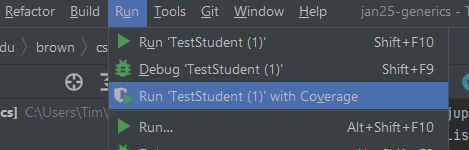
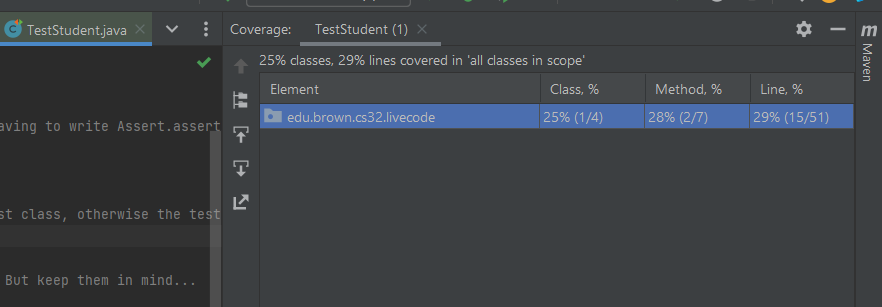
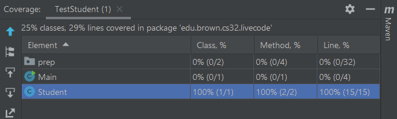
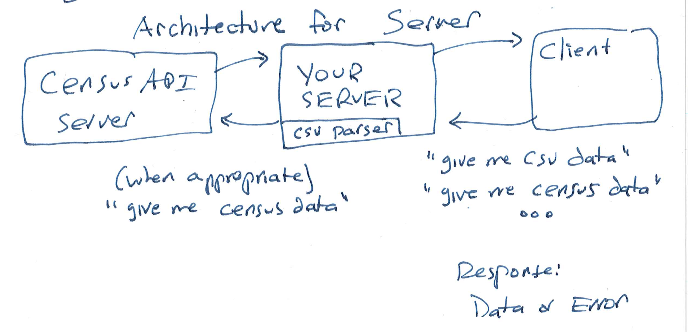
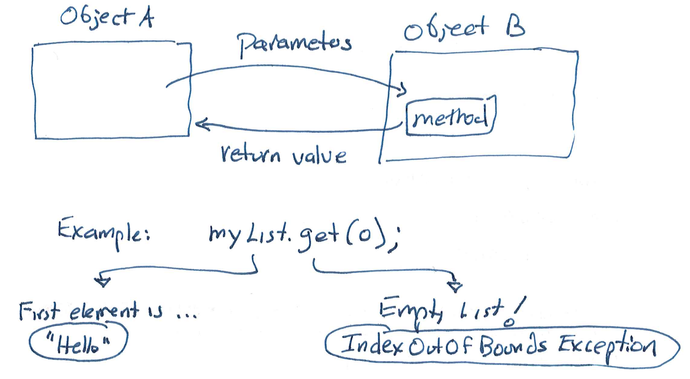
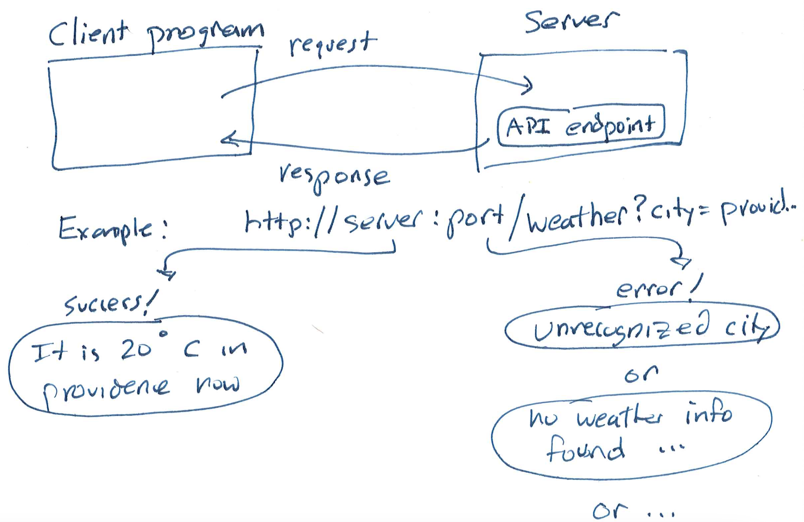

How to read these notes
Welcome to CSCI 0320/1340!
This page contains the lecture notes for the course. With JavaScript enabled, the table of contents will allow you to select a specific chapter. Likewise, the search icon should allow you to search for arbitrary words throughout all the notes. The lecture indexing is for Fall 2024. Some lectures are mainly done via slides, in which case we will attempt to link the slides here as well.
These notes are meant to be accompanied by the course live code repository, which contains a collection of code examples done in and out of class. The course assumes that students will review the live code.
This outline is subject to change, and notes are often modified in response to TA feedback or student Q&A before class. Some notes will be greyed out and inaccessible in the table of contents.
Exercises
Exercises are enclosed in expandable spoiler tags:
If you see an expandable piece of text, like this:
Think, then click.
Text for you to read after thinking or doing an exercise...
Supplementary Material
Effective Java 3rd Edition
Effective Java 3e is available to read online for free via Brown's library.
Success In 0320
Logistics
As of right now, there is room in the class. You shouldn't need an override in most circumstances; just enroll.
- I check override requests every day. If you're a Master's student, you'll need an override in CAB but I will almost certainly grant it.
- If you get an override, please accept ASAP so that Brown and the department get accurate enrollment estimates.
- If you are still shopping, keep 0320 in your cart so that you see announcements, etc. that we send to the list or post on EdStem.
- You need the prerequisites to take 0320 or 1340. If you haven't completed 0200, 0190, or a comparable course, you cannot take 0320 yet. (If you're a transfer student and concerned, let's talk; I was also a transfer student as an undergrad so I have some understanding of potential worries.)
Welcome!
Welcome to 0320/1340! Before we get started, turn to the people sitting next you to now and introduce yourself.
The most important part of 0320 is collaboration. With the exception of the very first assignment, everything in 0320 is group work.
- You'll be submitting your work to repositories that everyone in the class can (eventually) read.
- You'll be helping one another solve bugs and design problems (even if you're in different project groups; this is a requirement). To make this work, we need a professional and friendly environment.
We'll be passing out index cards. I like to anonymously learn some important things about students in this class, so please fill one out, answering:
- What is a goal you have for 0320?
- What is something you need to succeed in 0320?
- What is something you're afraid of in 0320? At the end of class, leave your card either here in front or on (one single) chair in the back so I can collect.
0320 is Different
You'll want to read the missive. You may not need to read all of it super deeply yet, but you should note the ways that 0320 is different from what you're used to. E.g., you'll be getting formative feedback every week from a mentor.
Speaking of mentors, let's introduce the TAs!
Immediate Advice
The first sprint goes out Monday, and there's a setup deliverable due before then. Please do it soon; you don't want to spend a lot of time early next week on setting up IntelliJ and so on.
Go to gear up sections. This semester, they're on Mondays and Tuesdays. Switching doesn't require a "conference" switch in CAB.
Read lecture notes and livecode. More than reading the code examples, pull the code and experiment with them! I try to strike a balance between depth and drill in class, which means that when we have in-class work, these resources will be vital references. (Today, for example, I won't talk through every bullet point in these notes.)
Prototype early. (Paraphrasing Andy: Start soon! Start yesterday!)
Please be aware that while this is an S/NC course, it is a lot of work. To quote a very wise remark from prior feedback: "You will work very hard, but not get an A".
My hours (at least for now) will be at 3pm (shortly after class)on Thursdays. I'll be in CIT 355 by default. If you need to join on Zoom (e.g., if you're sick, or off-campys) let me know and I'll make sure to open my Zoom to maximize accessibility. It's OK to bring code, design, etc. questions to my hours, if you wish. I want to be available.
Reading for Next Time
Non-technical reading: Clever Manka. It's short. Read it. What does it have to do with software engineering?
Reading for Sprints 1.1 and 1.2
Effective Java (3rd edition) items on:
- general contracts and equality/hash, Items 10, 11, and 12;
- generics, Items 26, 29, and 30; and
- exceptions, Items 69, 70, 72, 73.
Items in Chapter 4 may be useful for those who haven't done object-oriented programming recently. Especially Items 15, 17, and 19.
You are not required to buy this book. It's available free to read online via Brown's library.
Programming vs. Engineering
Let's say I asked you to open up your laptop and write me a sorting algorithm in the language of your choice. How would you react?
Think, then click.
Hopefully you didn't immediately start programming. I didn't really give you enough information, did I? I didn't say (among other things):- what kind of values you would have to sort;
- whether the sort needed to be stable, or in-place, or if there were any runtime requirements; or
- what the input interface should be (do you need to do file I/O or parse a CSV file?)
If you'd written insertion sort over lists of integers, but I needed to sort lists of records with a low worst-case runtime, you'd have had to start all over.
Get in the habit of asking questions. It will save you time and pain in the future.
Communicate clearly and often. It will save you time and pain in the future.
Document your assumptions and needs. It will save you time and pain in the future.
Don't misunderstand me: you'll all write lots of code in this class. Your career in CSCI so far has likely trained you to write a lot of code. But just writing code is, frankly, not good enough.
What makes "good software"?
There are many valid viewpoints on this. In the context of 0320, we're going to think about a few dimensions.
- Is the software ready for change? (Can it be extended easily, and without modifying the original code?)
- Is the software safe from bugs? (Not just "bug free", but resilient to the bugs of other software that might call it, or that it might call.)
- Is the software easy to understand? (Is it well documented? Is it designed in a way that other engineers will be able to follow without a lot of work? Is it clear how to use it?)
- Is the software fit to purpose? (Does it do what it is supposed to do? Figuring that out involves a lot of work, because other people are involved.)
That last category is incredibly broad. For me, it incorporates issues beyond functional correctness like:
- performance,
- security,
- harm minimization, etc.
The 0320 Collaboration Standard
This may be the weirdest course you'll take during your time at Brown CS. It will also challenge you in new ways. That is deliberate.
Our goal is not to teach you to do better at programming courses, or even computer science courses in general. Our goal is to teach you to be a better engineer, period. That goal has some natural consequences.
The collaboration policy is part of that. We'll use Git, an industry standard version control system. If you haven't had Git experience yet, that's OK! Here's an example of how it works on a project I just happen to have here on my laptop. By the way, I'm using IntelliJ to work on this code. This course strongly encourages you to use (and supports) IntelliJ; the gear up sections today and tomorrow can help you set it up.
One advantage of using Git is that all the code from lecture will be available on a public repository in the S25 folder (for Spring 2025) and also in the vignettes subfolder, which I use for small examples that may or may not appear in class. You can clone the repository to experiment with the code on your own machine. You should clone this repository as soon as you're able; we'll use it for in-class exercises, and it gives you the ability to experiment with changing the code on your own machine. Starting next week, I will assume that you have the repository cloned on your laptop, if you bring one.
If a filename or package has prep in it, I'm including it in the repository to help me structure the live coding session, and keep track of things like intentional and unintentional bugs. These are spoilers for class, and may not be reliable resources.
A Little Bit of Generics
In today's project I've got a very basic Student class. Every Student has a todo list, and the contents of their todo list are passed in the constructor.
public class Student {
List<String> todos;
public Student(List<String> todos) {
this.todos = todos;
}
...
}
We don't have any code yet to remove things, or add things to the list. What we do have is a method to find the most common thing on the todo list.
public String mostCommonTodoItem() {
Map<String, Integer> counts = new HashMap<>();
for(String s : this.todos) {
if(!counts.containsKey(s)) counts.put(s, 1);
else counts.put(s, counts.get(s) + 1);
}
String mostCommonItem = null;
int howCommon = 0;
for(String s : counts.keySet()) {
if(counts.get(s) > howCommon) {
mostCommonItem = s;
howCommon = counts.get(s);
}
}
return mostCommonItem;
}
There might be more concise ways to write this, but this way is useful for what I want to demo. It breaks the problem in half:
- first, compute the number of times every item appears on the list; and
- second, find which item had the highest count.
Looking at this code, you might have some questions. One is whether I can really say there is one unique most common item on the list. I'm making some unstated assumptions, aren't I? More on that later in the semester.
For now, let's observe that the todo list for every student needs to contain String items. But there's no real reason for that. Our mostCommonTodoItem() method would work perfectly if we changed String to Integer. Or we changed String to Object, or even to some other more complicated type like List<String> (then each todo item would be its own list). But to make such a change, we need to modify many places in the method, and copy it. We'd have mostCommonTodoItem_String and mostCommonTodoItem_Int and so on. That sounds like a lot of work. The code isn't easily extensible.
We can fix that using Java generics. Rather than saying List<String>, what we want to do is speak of a list of some arbitrary type---that the method doesn't need to care about the details of. Let's call that arbitrary type T for short. Then we might say that the Student class has a field List<T> todos, and write the method this way:
public T mostCommonTodoItem() {
Map<T, Integer> counts = new HashMap<>();
for(T s : this.todos) {
if(!counts.containsKey(s)) counts.put(s, 1);
else counts.put(s, counts.get(s) + 1);
}
T mostCommonItem = null;
int howCommon = 0;
for(T s : counts.keySet()) {
if(counts.get(s) > howCommon) {
mostCommonItem = s;
howCommon = counts.get(s);
}
}
return mostCommonItem;
}
It's the same code we would have written if we'd changed String to some other type, except we're just plugging in this new name T instead. Here, T is called a type variable. Crucially, a type variable is not a variable at runtime. It doesn't hold a value or a reference. Instead, it's a variable that the compiler uses when it's reasoning about the program. We can make this code valid Java by declaring T in the class definition:
public class Student<T> {
...
}
Every time we create a Student, that instance will have a todo list containing items of some type. That type will always have to be the same type for any specific student; that single type is the value of T (which only exists for the compiler). We can create students just like we would without the type variable, but we need to provide a little information, like this:
Student<String> tim = new Student<>(List.of("lecture notes", "email", "email", "family", "email"));
Student<Integer> nim = new Student<>(List.of(1, 17, 3, 43, 1, 2, 5));
This is exactly the same thing you do when you create a new List or Set or HashMap! All of these data structures are implemented using type variables. They are a great way to make your code easy to use and extend. (We'll revisit generics and type variables a little later in the semester, but this is as much as you need for now.)
Most programming languages, at least those with a static type system, support this sort of thing. Technically, it's an example of something called parametric polymorphism. Even Python's type-hint system allows it. So does TypeScript.
While we're here editing this class, there's something I don't like. What happens if the list is empty? Then the method returns null. This feels unsafe, or at least not very communicative. We could be throwing an exception that has more meaning---like IllegalArgumentException (or maybe even our own exception type). I'll add this to the start of the method:
if(this.todos.isEmpty()) {
throw new IllegalArgumentException();
}
Great! So we've made 2 improvements to the code: one which makes it more generic, and one that makes it a little more useful to the program that's calling it.
Now that we've made this change, I'll just commit the change to my local repository. First, I'll tell Git that I want it to include the change I just made:
git add Student.java
At any point, I can ask Git for the status of the repository:
git status
which can help keep track of which files are changed, added (i.e., ready to be comitted) etc.
I see the file I want to change is ready, so I'll commit the change, with a human-readable message:
git commit -m "feat: generic student TODO list, better error behavior"
So far, the change is only on my local machine: in the file, but also in the repository. If I want others on staff (and all of you!) to get the change, I need to push to the repo:
git push
We can see a log of commits on the Github page for the project. Each of these entries shows a commit I've made in the past. If someone else wants to review the changes I've made, they can just look at the difference between commits. This is tremendously useful for group work, and most real engineering is group work.
Now if any of you view the repo, you'll see my change. It's that easy! Here's a sketch image of what's going on. Always keep in mind that these three things are different:
- the files on your filesystem;
- the history and current version of those files in your local repository; and
- the history and current version of those files in your remote repository.

As the semester progresses, we'll have expectations about your use of Git. For now, focus on your commits and pushes:
- Name your commits something informative, and give credit to anyone who pair-programmed or worked with you. (More on this in the gearup.)
- Commit and push regularly. Don't just push everything all at once on the day the sprint is due. If your laptop breaks, and you haven't pushed to Github, you will be a very unhappy person and we may not be particularly sympathetic.
In future, we'll ask you to use branches---which are a great way to develop in parallel with others. For the first sprint, working in the main branch is fine.
Testing with JUnit
Unfortunately, I forgot to do something really important.
Since this was an existing project, we had test cases written for it. I guess I should have run those tests before pushing my update, huh? Let's have a look. Our tests use JUnit, a popular testing library for Java. How do we install JUnit? Just by adding it as a dependency in Maven, our Java package manager. Your Maven configuration usually lives in a single file: pom.xml. In my project, I have:
<dependencies>
<dependency>
<groupId>org.junit.jupiter</groupId>
<artifactId>junit-jupiter</artifactId>
<version>RELEASE</version>
<scope>test</scope>
</dependency>
</dependencies>
<build>
<plugins>
<plugin>
<groupId>org.apache.maven.plugins</groupId>
<artifactId>maven-surefire-plugin</artifactId>
<version>2.22.2</version>
</plugin>
</plugins>
</build>
This loads JUnit for testing in my application. (The plugin is to help JUnit interoperate well with the build system we'll be using, Maven, which you may recall is the tool that uses this pom.xml file.)
I previously had this test in my suite:
@Test
public void emptyList() {
Student student = new Student(List.of());
assertNull(student.mostCommonTodoItem());
}
There are now some warnings in the test, because Student is now generic, and there are no angle-bracketed type parameters in my test. But we can fix those pretty easily, just by adding <> or <String> in some places.
But the test still fails. I guess I put in a bug by mistake. But I don't really understand how, or what the problem is. How do I work through the problem?
This is a simple issue that you may immediately see and know how to fix. That's not the point. If it were something bigger, it would be difficult to fit it into class. So let's treat this as a real bug, and learn better how to diagnose such problems.
The 0320 Debugging Recipe
I think I'm supposed to follow this debugging recipe. And why don't you all help me follow it? It starts in a strange way:
Rule One
"Never debug when tired or angry."
I don't feel particularly angry, and I just had a sandwich. So I think I'm good to go. (This rule is not a joke, however. When you're tired and/or angry, your effectiveness per unit time goes down, and you may end up convincing yourself to make changes that are not good ideas in hindsight and make the problem even harder to fix. This is a reason to start work ASAP.)
What's Wrong?
Assemble your knowledge. Write no more than two sentences for each question:
- What is the purpose of the code you're working on?
- What steps can you perform to reproduce the bug?
- What is the expected behavior/result, and what is the unexpected actual behavior/result?
- Why do you expect the result that you expect?
Let's give it a try.
I'm working on a method that finds the most common item in a list. I can reproduce the bug by running the test suite for the
Studentclass. The failing test creates aStudentinstance with an empty list, and then invokes the most-common method. I expected this test to pass. I made the code objectively better, so tests shouldn't be failing.
Tell the Story
Now describe how you think the system operates as it approaches the unexpected actual result. Write your description as a series of steps. Use no more than one or two sentences for each step, but each step should be testable as a hypothesis about how the system works.
The student is created, and its
todosfield contains a reference to that empty list. Then the method is called, the empty-list check is hit, my exception gets thrown, and the test should pass.
Localization
Confirm each step in your description is accurate. Use any reasonable means (e.g., print statements or a debugger). The first step where the program behaves unexpectedly is a possible location for the original bug. More commonly, it contains the call site for the actual buggy code.
I see the student is created, and I know the method is called because I added a
printlnto check. I see my exception is being returned, because I added aprintlnto check.* But an exception is not the same asnull.
Notice how this process is leading us to the problem: that an exception being thrown is not the same as returning null. This is a pretty simple bug, but the process of narrowing your attention through experiments is a professional technique that works even in enormous enterprise systems.
We expect you to follow the recipe, especially during collab section. If you were my debugging partner, my answers to those questions may have pointed you directly to the problem!
I guess I need to rewrite my test. But wait. Isn't what we just did cheating? I let you see my code, and that might influence your solution to this project.
No. In 0320, we have an open collaboration policy---even about code. But in exchange, we need you to follow some basic professional standards. Things like: giving credit to sources, not short-circuiting anybody's learning, and never adapting code you don't understand or can't test well. See the missive for the full statement.
A failure to meet these basic professional standards would be a violation of Brown's academic code. It would also get you in trouble at work. To run a course with such an open policy is risky---if abused, it harms your learning and our ability to keep the course collaborative. So, to protect the format of the course, if these standards were violated I would have to file an academic code case and then relentlessly pursue it.
But I won't have to do that, right?
What About AI?
What about it? You'll be allowed to use it, just like any other resource. However, you'll need to conform to the above standards, just as if it were a collaborator. I generally say more in response to your note-card responses.
How Does Grading Work?
0320 is mandatory S/NC. We do give S with distinction. The course is divided into 2 parts: the sprints and the term project. The sprints let you demonstrate command of new technical skills (which we give formative feedback on). The term project lets you show you can apply those skills in a new context of your own.
The missive talks at length about grading; I won't try to duplicate all that information here. However, here are some key features of 0320's grading.
1-week sprints: You'll have a deliverable every week. This gives us a better cadence for feedback. You'll alternate between asycnhronous video demos and synchronous demos each week, and the demos are the primary way your mentors will generate feedback.
Feedback Spreadsheet: You'll receive access to a spreadsheet where your mentors will leave formative feedback every week, along with whether you've met expectations for the week. We'll expect you to work on addressing this feedback between sprints.
No Hidden Rubrics: All guidance that we give TAs for grading we'll give to you as well. We'll also be providing you with a "demo recipe" to help you prepare. There are no secret rubrics or hidden test suites in 0320; we want you to know what our expectations are.
Collaboration Crests: We would like to more strongly encourage collaboration between students. You'll need to earn a certain number of crests throughout the semester, and report how you've earned them on your feedback sheet. The details have changed since Fall 2024, to give you more choice in how you earn crests.
Testing Matters: We'll talk more about testing on Tuesday, but it should go without saying that in 0320, we take testing seriously. The handouts contain pretty good advice on meeting our requirements. Read them.
It is a bedrock principle of 0320 that if you cannot demo or test something, it's not actually done.
Aside: Test Coverage
There are a few metrics for how good a test suite is. One is "test coverage", which measures how much of the code the suite exercises. Although we encourage you to run from the terminal using mvn, IntelliJ is probably the best way to get test-coverage information easily, without more configuration work. To do this, run a test file in IntelliJ, then select "Run with Coverage" from the "Run" menu:

This will open a new pane in IntelliJ:

My 3 tests for today's lecture are only exercising 29 percent of the code! That's a bit worrying. (We'll expect at least 50 percent line coverage on CSV, which should be very easy to reach.) If you click on the package name, it will show you lower-level information:

Actually, my coverage isn't bad after all. I simply don't have tests in this file for my course-prep code, or for the Main class. That's OK; all lines in the Student class are being exercised.
Don't view a high level of coverage as a guarantee! Coverage is imperfect; there are a lot of things it doesn't measure. But it's one means by which you can discover problems with your testing.
On a similar note, there's diminishing returns on time to improve coverage. In a real, large code base, it's far more difficult to move from 90% to 95% than it is to move from 50% to 65%. Don't spend all your time trying to improve coverage at the exclusion of all else, but don't neglect it either. Our sprints are small, compared to most real-world projects!
The Debugging Recipe
Rule One
Never debug when tired or angry. If you must debug when tired, commit to a stopping time. Set a timer or ask a friend to help you keep that commitment.
Identify What's Wrong
Assemble your knowledge. Write no more than two sentences for each question:
- What is the purpose of the code you're working on?
- What steps can you perform to reproduce the bug?
- What is the expected behavior/result, and what is the unexpected actual behavior/result?
- Why do you expect the result that you expect?
Tell the Story
Now describe how you think the system operates as it approaches the unexpected actual result. Write your description as a series of steps. Use no more than one or two sentences for each step, but each step should be testable as a hypothesis about how the system works.
Localization
Confirm each step in your description is accurate. Use any reasonable means (e.g., print statements or a debugger). The first step where the program behaves unexpectedly is a possible location for the original bug. More commonly, it contains the call site for the actual buggy code.
Record this location, along with the expected and actual behavior.
Explanation
If you have a hypothesis about the cause of the bug, make an experiment to see if you are correct.
- If yes, proceed to fix the problem. Whenever possible, add a regression test so that this bug will be quickly identified if it happens again. Re-run all tests to confirm that your "fix" hasn't broken something else.
- If you have no hypothesis, or your hypothesis was incorrect, increase your level of detail about that single step. Look for unstated assumptions and dependencies; often, you'll find you left something important out of the original story. Then repeat the localization step.
Testing, Strategies, and the Debugging Recipe
Expectations
This chapter is designed to support your work on sprints 1.1 and 1.2. In it, you'll find:
- a quick intro to some technical terms from agile development;
- a conceptual discussion on unit testing;
- a worked example using the strategy pattern; and
- a concrete discussion and on unit testing.
You'll be able to follow along and experiment with the end result by cloning the class livecode repository.
Now is a good time to clone the livecode repository if you haven't already. We will be using it for in-class exercises soon, and it's also meant to be a reference for the sprints.
Note on CSV
Many questions are being answered in Ed already. You might benefit from skimming the topics, or searching. We are trying to promote discussion and thought, not give "the answer". If you ask "Is this right?" we might not answer with a boolean. That's just life.
Keep in mind, you should not need to use instanceof or typecasting outside of methods like overriding .equals or .hashCode in a new class. We'll also be understanding if you must typecast in your test suites, although you should not need to do this for the first 2 sprints.
Agile Terminology
We're going to be using a few terms of art in 0320. While we do put a bit of our own spin on these (largely because this is a class, and not a full-time job) it's important to understand what's going on.
Agile Development
We say that a development methodology is agile if, broadly speaking, it prioritizes sthe ability to change plans in response to regularly-sought feedback. Once we try to define it more precisely, you'll find multiple competing definitions, and many competing methodologies that purport to be "agile". Usually, you'll see the term used in contrast to "waterfall" development, where the software project proceeds along a linear path, like this:
- Requirements
- Specifications
- Design
- Implementation
- Testing
- Maintenance
Of course, all of these "phases" still exist in an agile project! The difference is that (e.g.) customer feedback on an early demo might result in changes to the requirements, or some trouble with testing an early prototype might mean changing the design to make testing easier. To make this possible, agile projects usually start development early, expecting that some, or even most, of that prototype code will be replaced later. But something must be possible to demo at every stage, or feedback is hard to obtain.
Sprints
Agile development is often divided into short periods of development effort: sprints. The duration of a sprint varies depending on the project and company. In 0320, we've organized development into one-week sprints with relatively small requirements for each. Each sprint builds on the last.
Organizing sprints is an important skill for project managers. Timelines need estimates (and the ability to alter those estimates when needed), tickets need to be managed, and so on. We'll gloss over most of this in 0320, although your term project will need some attention to project-management tasks like these.
User Stories
A user story is a short description of desired behavior. You'll often find these used in requirements documents for agile projects. There are a few templates, but we (mostly) follow the "As a USER-ROLE I can NEEDED-BEHAVIOR so that TASK-OR-BENEFIT" pattern. Look at the user stories in sprint 1.1, and you should see this pattern.
It's important to remember that, although they follow a template, user stories are informal: they may not be enough by themselves to really describe what the customer needs. To help bridge this gap, they are often accompanied by acceptance criteria, which give additional lower-level requirements. But these are still fairly informal, and there's often a need for more precise specification to be agreed upon between developers!
But what makes a good user story? A user story describes a narrow, demoable piece of functionality that can reasonably be accomplished in a single sprint. Often, you might start with a rough user story and realize that it's too big, and then split it into multiple stories. If users request an enhancement to an existing story, commonly these would be added as new stories (and more infrequently as additional acceptance criteria).
If you're building a software package that is intended for other developers to use, they are potential users! In this class we will be giving you user stories from the developer-user perspective in addition to the end-user perspective. Your API design, documentation, etc. will matter to developer users.
Clever Manka
There's a fairy tale I like: Clever Manka, from a 1920's compilation called The Shoemaker's Apron, available on Project Gutenburg here. I'll reproduce the text in full here, within these spoiler tags.
Clever Manka
There was once a rich farmer who was as grasping and unscrupulous as he was rich. He was always driving a hard bargain and always getting the better of his poor neighbors. One of these neighbors was a humble shepherd who in return for service was to receive from the farmer a heifer. When the time of payment came the farmer refused to give the shepherd the heifer and the shepherd was forced to lay the matter before the burgomaster.
The burgomaster, who was a young man and as yet not very experienced, listened to both sides and when he had deliberated he said:
"Instead of deciding this case, I will put a riddle to you both and the man who makes the best answer shall have the heifer. Are you agreed?"
The farmer and the shepherd accepted this proposal and the burgomaster said:
"Well then, here is my riddle: What is the swiftest thing in the world? What is the sweetest thing? What is the richest? Think out your answers and bring them to me at this same hour tomorrow."
The farmer went home in a temper.
"What kind of a burgomaster is this young fellow!" he growled. "If he had let me keep the heifer I'd have sent him a bushel of pears. But now I'm in a fair way of losing the heifer for I can't think of any answer to his foolish riddle."
"What is the matter, husband?" his wife asked.
"It's that new burgomaster. The old one would have given me the heifer without any argument, but this young man thinks to decide the case by asking us riddles."
When he told his wife what the riddle was, she cheered him greatly by telling him that she knew the answers at once.
"Why, husband," said she, "our gray mare must be the swiftest thing in the world. You know yourself nothing ever passes us on the road. As for the sweetest, did you ever taste honey any sweeter than ours? And I'm sure there's nothing richer than our chest of golden ducats that we've been laying by these forty years."
The farmer was delighted.
"You're right, wife, you're right! That heifer remains ours!"
The shepherd when he got home was downcast and sad. He had a daughter, a clever girl named Manka, who met him at the door of his cottage and asked:
"What is it, father? What did the burgomaster say?"
The shepherd sighed.
"I'm afraid I've lost the heifer. The burgomaster set us a riddle and I know I shall never guess it."
"Perhaps I can help you," Manka said. "What is it?"
So the shepherd gave her the riddle and the next day as he was setting out for the burgomaster's, Manka told him what answers to make.
When he reached the burgomaster's house, the farmer was already there rubbing his hands and beaming with self-importance.
The burgomaster again propounded the riddle and then asked the farmer his answers.
The farmer cleared his throat and with a pompous air began:
"The swiftest thing in the world? Why, my dear sir, that's my gray mare, of course, for no other horse ever passes us on the road. The sweetest? Honey from my beehives, to be sure. The richest? What can be richer than my chest of golden ducats!"
And the farmer squared his shoulders and smiled triumphantly.
"H'm," said the young burgomaster, dryly. Then he asked:
"What answers does the shepherd make?"
The shepherd bowed politely and said:
"The swiftest thing in the world is thought for thought can run any distance in the twinkling of an eye. The sweetest thing of all is sleep for when a man is tired and sad what can be sweeter? The richest thing is the earth for out of the earth come all the riches of the world."
"Good!" the burgomaster cried. "Good! The heifer goes to the shepherd!"
Later the burgomaster said to the shepherd:
"Tell me, now, who gave you those answers? I'm sure they never came out of your own head."
At first the shepherd tried not to tell, but when the burgomaster pressed him he confessed that they came from his daughter, Manka. The burgomaster, who thought he would like to make another test of Manka's cleverness, sent for ten eggs. He gave them to the shepherd and said:
"Take these eggs to Manka and tell her to have them hatched out by tomorrow and to bring me the chicks."
When the shepherd reached home and gave Manka the burgomaster's message, Manka laughed and said: "Take a handful of millet and go right back to the burgomaster. Say to him: 'My daughter sends you this millet. She says that if you plant it, grow it, and have it harvested by tomorrow, she'll bring you the ten chicks and you can feed them the ripe grain.'"
When the burgomaster heard this, he laughed heartily.
"That's a clever girl of yours," he told the shepherd. "If she's as comely as she is clever, I think I'd like to marry her. Tell her to come to see me, but she must come neither by day nor by night, neither riding nor walking, neither dressed nor undressed."
When Manka received this message she waited until the next dawn when night was gone and day not yet arrived. Then she wrapped herself in a fishnet and, throwing one leg over a goat's back and keeping one foot on the ground, she went to the burgomaster's house.
Now I ask you: did she go dressed? No, she wasn't dressed. A fishnet isn't clothing. Did she go undressed? Of course not, for wasn't she covered with a fishnet? Did she walk to the burgomaster's? No, she didn't walk for she went with one leg thrown over a goat. Then did she ride? Of course she didn't ride for wasn't she walking on one foot?
When she reached the burgomaster's house she called out:
"Here I am, Mr. Burgomaster, and I've come neither by day nor by night, neither riding nor walking, neither dressed nor undressed."
The young burgomaster was so delighted with Manka's cleverness and so pleased with her comely looks that he proposed to her at once and in a short time married her. > >"But understand, my dear Manka," he said, "you are not to use that cleverness of yours at my expense. I won't have you interfering in any of my cases. In fact if ever you give advice to any one who comes to me for judgment, I'll turn you out of my house at once and send you home to your father." > >All went well for a time. Manka busied herself in her house-keeping and was careful not to interfere in any of the burgomaster's cases. > >Then one day two farmers came to the burgomaster to have a dispute settled. One of the farmers owned a mare which had foaled in the marketplace. The colt had run under the wagon of the other farmer and thereupon the owner of the wagon claimed the colt as his property. > >The burgomaster, who was thinking of something else while the case was being presented, said carelessly: > >"The man who found the colt under his wagon is, of course, the owner of the colt." > >As the owner of the mare was leaving the burgomaster's house, he met Manka and stopped to tell her about the case. Manka was ashamed of her husband for making so foolish a decision and she said to the farmer: > >"Come back this afternoon with a fishing net and stretch it across the dusty road. When the burgomaster sees you he will come out and ask you what you are doing. Say to him that you're catching fish. When he asks you how you can expect to catch fish in a dusty road, tell him it's just as easy for you to catch fish in a dusty road as it is for a wagon to foal. Then he'll see the injustice of his decision and have the colt returned to you. But remember one thing: you mustn't let him find out that it was I who told you to do this." > >That afternoon when the burgomaster chanced to look out the window he saw a man stretching a fishnet across the dusty road. He went out to him and asked: > >"What are you doing?" > >"Fishing." > >"Fishing in a dusty road? Are you daft?" > >"Well," the man said, "it's just as easy for me to catch fish in a dusty road as it is for a wagon to foal." > >Then the burgomaster recognized the man as the owner of the mare and he had to confess that what he said was true. > >"Of course the colt belongs to your mare and must be returned to you. But tell me," he said, "who put you up to this? You didn't think of it yourself." > >The farmer tried not to tell but the burgomaster questioned him until he found out that Manka was at the bottom of it. This made him very angry. He went into the house and called his wife. > >"Manka," he said, "do you forget what I told you would happen if you went interfering in any of my cases? Home you go this very day. I don't care to hear any excuses. The matter is settled. You may take with you the one thing you like best in my house for I won't have people saying that I treated you shabbily." > >Manka made no outcry. > >"Very well, my dear husband, I shall do as you say: I shall go home to my father's cottage and take with me the one thing I like best in your house. But don't make me go until after supper. We have been very happy together and I should like to eat one last meal with you. Let us have no more words but be kind to each other as we've always been and then part as friends." > >The burgomaster agreed to this and Manka prepared a fine supper of all the dishes of which her husband was particularly fond. The burgomaster opened his choicest wine and pledged Manka's health. Then he set to, and the supper was so good that he ate and ate and ate. And the more he ate, the more he drank until at last he grew drowsy and fell sound asleep in his chair. Then without awakening him Manka had him carried out to the wagon that was waiting to take her home to her father. > >The next morning when the burgomaster opened his eyes, he found himself lying in the shepherd's cottage. > >"What does this mean?" he roared out. > >"Nothing, dear husband, nothing!" Manka said. "You know you told me I might take with me the one thing I liked best in your house, so of course I took you! That's all." > >For a moment the burgomaster rubbed his eyes in amazement. Then he laughed loud and heartily to think how Manka had outwitted him. > >"Manka," he said, "you're too clever for me. Come on, my dear, let's go home." > >So they climbed back into the wagon and drove home. > >The burgomaster never again scolded his wife but thereafter whenever a very difficult case came up he always said: > >"I think we had better consult my wife. You know she's a very clever woman."
Stories like this appear in numerous places throughout the world. For example, India has the story of Hiranyakashipu, a king with a boon protecting him from death "by day or by night", "indoors and out", etc. Narasimha, an avatar of Vishnu, finds a way around the riddle. So I might claim that humans find something universally valuable about them.
What in the world does a fairy tale have to do with testing?
If you're reading these notes without having been in lecture: think about these questions first, before you read the answer! If you don't, you'll be robbing yourself of a chance to participate and learn. (The collapsible sections are meant to help you avoid spoilers while you think.)
Don't worry about whether your answer is the same as mine. Especially in 0320, there are often many different good answers, even to technical questions.
Think, then click!
Clever Manka is a boundary condition tale. There is something special about boundary conditions and how they challenge our preconceptions. As testers, we should give boundaries the respect they deserve.
(Are you aware of more mythological or literary settings for this sort of boundary-condition riddle? Share them with Tim!)
Boundary Conditions: Testing and Defensive Programming
Here's an example: "I have tested a positive number, and I have tested a negative number." Surely all numbers are positive or negative. (Is this true?)
Here's another example: "I have tested this function, which accepts a Java Boolean, on both values: true and false." (What's missing?)
Never assume that the obvious partition of the space actually covers the space; be on the lookout for special cases, outliers, and even new dimensions about which to think. This isn't only about testing, either---see, for example, the Falsehoods Programmers Believe About Time. Part of programming defensively is trying to avoid making unnecessary assumptions, while still allowing for extensibility. Keep this in mind as we start to code (and test) together.
Live Coding: Seating Order
You can follow along with today's live coding in this Github repo, in the F24/sep10-seatingsorting directory. Open the pom.xml "as a project" in IntelliJ.
We will not usually be doing "livecode" from scratch. That would take up too much time. Instead, we'll use this opportunity to practice reading code that exists. Today, I'll be walking you through some design choices I made, some issues, and some useful techniques.
International diplomacy is complicated. Countries host a diplomatic corps of various ambassadors, envoys, etc. from other nations, and there is an elaborate protocol around order of precedence. Who gets the good seats? Who among a group is the one a new arrival will present papers to?
There are historical reasons for all this. Before communication was instantaneous and reliable, ambassadors had significant power to make decisions for their country, and so being an ambassador was a big deal. This isn't a history class, though, so let's focus on the engineering.
Diplomats: Records and Enums
I've written a Diplomat.java file, containing a record. I like records for reasons I've recorded in the file:
/**
* NOTE: records are a modern Java feature that make defining dataclasses convenient.
* A record is immutable, and toString(), equals(), etc. are automatically defined.
*
* If you like Python, this is similar to @dataclass
*/
public record Diplomat(Rank rank, String name) {
/**
* (Simplified) ambassadorial ranks c. 1961
* See: https://en.wikipedia.org/wiki/Diplomatic_rank#Ranks
*/
public enum Rank {
NUNCIO, AMBASSADOR, HIGH_COMMISSIONER,
MINISTER, ENVOY, CHARGE_DAFFAIRES
}
}
Enumerations (enum) are a nice way to limit possibilities. If we'd used numbers or strings as the type of a diplomat's rank, we'd have to worry about what our program would do if someone had a strange rank like -172653 or "242RT#$#GR@@@#". This is an example of defensive programming: we've limited room for unexpected errors.
Speaking of defensive programming, there's one more issue here. Do you see it? (Remember our conversation about null from last time...)
Think, then click!
The value null can be used as a Rank, and so we could create a Diplomat object without a rank. Similarly, we could pass null for their name. We can fix this by adding some validation to the record. Records make this easy via "compact" constructors:
public Diplomat {
// Values are initialized by the record infrastructure. But we want extra validation:
if (rank == null || name == null)
throw new IllegalArgumentException("A diplomat must have non-null rank and name.");
}
Notice that there is no () after Diplomat, like you may be used to when defining a contructor of no arguments. The record still initializes its fields—the constructor is defined implicitly. But we get to provide additional computation with this new syntax. In this case, we'll forbid diplomats that lack either a rank or name. This is another kind of defensive programming, because our library isn't meant to work if diplomats have no rank.
Exercise: Make sure you can get this code from the livecode repository. Then make this change (the code is commented out, later in the file). Try creating a nameless or rankless Diplomat in the Main class (i.e., one with null as its name or rank). Print it out.
Determining Order of Precedence
Let's write code that can sort a list of Diplomat objects in their order of diplomatic predecence. Since this isn't a history or international-relations class, we'll simplify things. Let's say that for our fictional country, the order goes in three levels:
NUNCIO,AMBASSADOR, andHIGH_COMMISSIONER; thenMINISTERandENVOY; thenCHARGE_DAFFAIRES.
So we'd put an ambassador ahead of a minister, but it would be ok to put a high commissioner above or below an ambassador, since they're at the same tier of ranks.
We're not done though. The order of precedence is complicated by some real-life norms that any real software would need to address. When we come back from the break, we'll look at a small challenge and a bigger challenge.
Design Challenges
Small Challenge: countries may give precedence to Nuncios, at their discretion
Nuncios are ambassadors from the Holy See, that is from the Pope, separately from the country of Vatican City. Some traditionally Catholic countries will always list their nuncio first in any order of precedence.
This means that we need some way of adjusting the comparison used for sorting. Maybe nuncios are before anything else, or maybe they're considered equal to ambassadors. It depends on the country.
Larger challenge: conventions change over time
New titles get added (or removed), treaties get revised, and the world changes. Ideally, we'd like our program to allow countries some flexibility in how they order their diplomats, beyond the nuncio question above.
This means that we probably don't want to write a sort that hard-codes in the above ordering, or even a sort that takes a boolean to resolve the nuncio question. We want a sort that uses the strategy pattern.
Comparators
A Comparator is an object that implements a compare method that tells a caller whether its two arguments are <, >, or equal. It's one of the most common uses of the strategy pattern in Java, and it's perfect for our needs. I wrote a PrecedenceComparator below. I've left comments that touch on some of the features used, and raise some design questions we'll go over in lecture.
package edu.brown.cs32.live.diplomacy;
import java.util.Comparator;
// Avoid the need to precede ranks with "Diplomat.Rank."
import edu.brown.cs32.live.diplomacy.Diplomat.Rank;
/**
* Comparator that implements the order of precedence for members of a diplomatic corps.
* This can determine (e.g.) seating order, or who among a group is spoken to first.
*
* The rules vary by country, and this isn't a faithful implementation; don't use this code
* to seat real diplomats at a real banquet!
*/
public class PrecedenceComparator implements Comparator<Diplomat> {
/**
* If present, a diplomatic rank to always give precedence over others.
*
* NOTE: We could have just used "null" to represent the case where this isn't present.
* What are the plusses and minuses of this design choice?
* Could it be that there are multiple "OK" answers?
*/
private final Rank givePrecedence;
/**
* Create an order of precedence where a certain diplomatic rank is given precedence over all others.
* When this rank is not involved, the standard precedence is used.
*
* Real world example:
* According to the Vienna Convention, nuncios (ecclesiastical diplomats from the Holy See), have equal
* rank to ambassadors. However, the host country is allowed to grant seniority to a nuncio over others.
* @param givePrecedence diplomatic title that should always be treated as senior
*/
public PrecedenceComparator(Diplomat.RANK givePrecedence) {
if(givePrecedence == null)
throw new IllegalArgumentException("givePrecedence field of 1-argument constructor must be non-null; use" +
" the 0-argument constructor to not automatically prefer any rank.");
this.givePrecedence = givePrecedence;
}
/**
* Create an order of precedence where the standard precedence is used.
*
* NOTE: we may come to regret using null for this.
*/
public PrecedenceComparator() {
this.givePrecedence = null;
}
@Override
public int compare(Diplomat o1, Diplomat o2) {
// By documentation (see mouseover): Negative if o1 < o2; zero if o1 == o2; positive if o1 > o2
// the sign of compare(x,y) must be the same as compare(y,x), and compare must be transitive.
if(o1.rank() == this.givePrecedence) return -1;
if(o2.rank() == this.givePrecedence) return 1;
// NOTE: I personally like Java 17's pattern-matching switch expressions for these situations.
// I find them easier to read than complicated if-statements, and I will get a warning if I don't give a case
// for every possibile enum value. That means I can *LEAVE OUT* the "default" case and trust the compiler to
// warn me if I ever add a new value to this enum. "Default" cases check at runtime, and can lie around for
// years and cause subtle bugs when new values get added.
return switch(o1.rank()) {
case NUNCIO, AMBASSADOR, HIGH_COMMISSIONER ->
switch(o2.rank()) {
case NUNCIO, AMBASSADOR, HIGH_COMMISSIONER -> 0;
case ENVOY, MINISTER, CHARGE_DAFFAIRES -> -1;
};
case MINISTER, ENVOY ->
switch(o2.rank()) {
case NUNCIO, AMBASSADOR, HIGH_COMMISSIONER -> 1;
case ENVOY, MINISTER -> 0;
case CHARGE_DAFFAIRES -> -1;
};
case CHARGE_DAFFAIRES ->
switch(o2.rank()) {
case NUNCIO, AMBASSADOR, HIGH_COMMISSIONER, ENVOY, MINISTER -> 1;
case CHARGE_DAFFAIRES -> 0;
};
};
}
}
I've also written a little sorting algorithm of my own. The method takes the list to sort and a comparator.
Exercise: what happens if we allow Diplomat object with null rank? Do we get a noisy failure, or a silent failure?
Making Diplomat Resilient
It's both! There's a noisy failure for one constructor, and silent failure for the other---where the null-ranked Diplomat gets precedence!
Let's inject a check into the constructor of Diplomat. That's a better place for it.
/**
* Define the constructor ourselves (don't use the one that "record" gives
* us) so that we can validate input values. This is called a *compact*
* constructor, and works only for records. Note that it's _not_ the same
* as a 0-argument constructor Diplomat().
*/
// public Diplomat {
// // Values are initialized by the record infrastructure. But we want extra validation:
// if (rank == null || name == null)
// throw new IllegalArgumentException("A diplomat must have non-null rank and name.");
// }
There are other things we could (or should) do, too. For example, making our comparator not treat a lack of precedence rank the same as giving predecence to null.
That went by pretty quickly---clone or pull the livecode repository, and try this out!
Testing Sorting
I've got a JUnit test class written to test my sorting method. Note that we're not testing sorting of diplomats yet. That would tangle the functionality of the two methods. Instead, let's try to focus on testing my implementation of bubblesort.
package edu.brown.cs32.live.sorting;
import org.junit.Test;
import java.util.ArrayList;
import java.util.Comparator;
import java.util.List;
import static org.junit.Assert.assertEquals;
/**
* Test the bubble-sort implementation in the Sorts class.
* Note that we are *NOT* testing how bubble sort works with the diplomatic ordering.
* Instead, we'll just use the natural ordering that exists on naturally comparable objects.
*/
public class TestSorts {
@Test
public void testBubbleEmpty() {
List<Integer> lst = new ArrayList<>(List.of());
// NOTE: Comparator.naturalOrder() saves us from having to write a comparator strategy for integers.
// If you mouse over it, you'll see a fairly complex generic type. We'll cover that in a future class.
Sorts.bubbleSort(lst, Comparator.naturalOrder());
assertEquals(0, lst.size());
}
// NOTE: Run "with coverage" to see line-coverage info.
// Are there any pieces of the code that I haven't yet exercised?
// (We're looking for at least 50% line coverage for this sprint, but
// only for *your* classes, not the kd-tree stuff.)
}
If we run this, all tests pass.


But do you notice something missing about the test suite? Is there important stuff I'm not exercising (keeping in mind we're interested only in the sort so far, not in the diplomat comparator.) We can get a hint by running with coverage. (You might need to run once without coverage before this option is enabled.)

Here's the result:

Notice the 20% under "line" coverage. My suite has only exercises a fifth of the lines in the edu.brown.cs32.live.sorting package. Since this contains only my sorting method, I'm worried---the method's hardly being tested at all! If we click into the method, we'll see green and red bars shown to the left of the code:

We've only tested the empty list input, and so none of those later lines ran at all. We should fix this.
Exercise: Add a test of your own!
Let's add this test:
@Test
public void testBubbleFiveDifferentReverse() {
List<Integer> lst = new ArrayList<>(List.of(5,4,3,2,1));
// NOTE: Comparator.naturalOrder() saves us from having to write a comparator strategy for integers.
// If you mouse over it, you'll see a fairly complex generic type. We'll cover that in a future class.
Sorts.bubbleSort(lst, Comparator.naturalOrder());
assertEquals(List.of(1,2,3,4,5), lst);
}
Unfortunately, this test fails. We do get up to 60% coverage, though. (We're looking for at least 50% from you on this sprint.)
Expected :[1, 2, 3, 4, 5]
Actual :[5, 4, 3, 2, 1]
Our sorting code seems to be sorting in reverse order, rather than increasing order. Let's write another test to help us triangulate the behavior.
@Test
public void testBubbleFiveMixedOneDuplicate() {
List<Integer> lst = new ArrayList<>(List.of(5,1,3,2,3));
// NOTE: Comparator.naturalOrder() saves us from having to write a comparator strategy for integers.
// If you mouse over it, you'll see a fairly complex generic type. We'll cover that in a future class.
Sorts.bubbleSort(lst, Comparator.naturalOrder());
assertEquals(List.of(1,2,3,3,5), lst);
}
Notice how we've slowly widened the scope of assumptions we're violating in the tests. First, we pass something non-sorted, and then we pass something with duplicates and partial sortedness. We're now at 100% line coverage! Unfortunately, the result is even more confusing. My method is not sorting in reverse order; it's just plain wrong:
Expected :[1, 2, 3, 3, 5]
Actual :[5, 3, 3, 3, 3]
Debugging: Breadth-First vs. Depth-First
Good debugging involves balancing two equally important instincts:
- breadth-first exploration to rule out potential causes and maintain productive focus; and
- depth-first exploration, narrowly focused on a specific idea about the cause.
If you skip to depth-first too quickly, you may waste a lot of time. Our debugging recipe is meant to scaffold this process. Let's follow it in this case.
What Do We Know?
I'm trying to write an implementation of bubblesort. It should sort the given list in increasing order, according to the comparator provided.
Run testBubbleFiveMixedOneDuplicate to reproduce the bug.
Expected :[1, 2, 3, 3, 5]
Actual :[5, 3, 3, 3, 3]
This is wrong because the 2 and 1 are both dropped from the input list.
What Computational Steps Happen?
- The input list
[5,1,3,2,3]is created - The input list is passed to
bubbleSortalong with the natural ordering (increasing) for integers. - The sorting method loops through every index of the list (
ii) - then it loops through every index greater than
ii(jj) - If the value at
iiis greater than the value atjj, the values are swapped in the list. - The list is modified in-place, so there's no return value.
Localization
Either my expectations are wrong, or my story is. In this case, I'm pretty sure the sort is modifying the list incorrectly---the result needs to include all the same elements! So there's a problem with my story somewhere. Either one of the steps isn't true, or one of the steps is not detailed enough to be untrue. Let's run some experiments!
Is the correct input list being received by bubbleSort?
We'll test this via System.out.println. Looks correct. We can now ignore the possibility that the list isn't created properly, or isn't be passed correctly.
Is the loop working as expected?
We'll test this via System.out.println, too. Looks correct: we see ii increasing and jj starting and stopping at the correct indexes.
Is the swap working as expected?
We'll test this via System.out.println, too. But something's going wrong: we don't see the value at ii preserved by the swap. We now have a more specific location for the bug.
Fixing The Bug
At this point, we know which lines of code to focus on. We can step through them with a debugger or with more print statements, to discover how to fix the issue.
Some Notes
I've been programming a long time and I still catch myself failing to follow the debugging recipe. I think I know what's going on and I turn out to be wrong, and spend a lot of time deep-diving into a location that isn't actually the source of the issue. In fact, last year I was working on a demo for React programming, and spent 2 hours debugging something (the wrong thing) because I jumped ahead before thinking carefully.
User Interfaces, Testing More Than Methods
Ice Breaker
The collaboration policy we have can sometimes be difficult to follow, or trust. So let's break the ice. Turn to your neighbor and show them what you have for Sprint 1.1 so far.
We need to be both professional and understanding about this sort of thing. Also, keep in mind that quite a few students are joining the class late, etc. So if someone doesn't have much yet, be positive. The point is to fight the social tension against sharing code in this class.
User Interfaces
In the next Sprint, 1.2, you'll be creating a user interface. Admittedly, it might not be what you associate with the term. It's "just" a command-line application which you'll run at your terminal prompt, meant to search the CSV files you've been parsing. For many of you, this may be the first time you've created such a thing.
Exercise: what makes a good user interface?
Think, then click!
Whatever the user needs. If you can drive a car, imagine how many iterations it took to get the steering wheel right. Yes, that's a user interface. In class, I'll be passing around a slide rule—something most of us think of as an archaic tool for engineers from a bygone era. But it, too, was a carefully designed user interface: slide rules allowed a skilled user to make sophisticated calculations.
I'm not a skilled user. But I still think they're interesting.
The point is: don't limit your view of what a user interface can be. Even a programing language is a user interface.
Testing User Interfaces
Engineers test everything they can, within the bounds of their budget and time constraints. So if we're making a user interface, we ought to be able to test that interface. But how?
If you took 0150, most of your projects had a graphical user interface. Did you test your projects? You might initially say "no", because (at least, at time of writing this) 0150 doesn't spend a lot of time on unit testing the way some other intro courses do. But I'd argue that 0150 students perhaps test more than students in any other intro course. You're just doing it manually.
Manual testing has its place, but it's not cost effective. So we'll strive to automate our tests, even the ones that manipulate a user interface.
Testing a Console Application
Exercise: How do you think you could test a command-line application automatically?
Here's how I'd suggest approaching the problem.
What resources are available to you?
A command-line application takes input from the keyboard and prints output to the screen. Concretely, the application interacts with the console using three stream objects:
System.in, which reads input from the console and provides it to the application;System.out, which reads output from the application and provides it to the console; andSystem.err, which works the same asSystem.out, but it usually used for error messages.
Perhaps we can use these objects in some way to automate interaction with our program.
What kinds of tests do you want to write?
Many applications have some state in them, and ours is no exception. If I forget to load a CSV file before I search it, I should get a very different result from if I load the file before searching. Similarly, if I have the ability to change files with a command, I should probably check that the new file is actually loaded, and searching will reference it instead of the old file.
So let's think about this as scripting interactions with the prompt, and not just specific outputs we'd get when entering a single command. Context and past commands could matter.
Mocking: the surprising value of fakes
What follows might be, alongside the strategy pattern, one of the most timeless and universal design ideas we cover in 0320. It's not just about testing command-line applications! Take the time to experiment with this general idea in different contexts throughout the semester; you won't regret it.
Exercise: How do you know you aren't a brain in a jar right now? That is, are you sure you're in class (or in your room, reading these notes), and not hooked up, Matrix-style, to a system that is sending you manufactured sense inputs and receiving the outputs of your nerves?
There's no hidden answer for this exercise, because it's a deep question. If you really want to explore these issues literally, there are many excellent philosophy and cognitive-science courses at Brown. Take one!
The real exercise is this. Why is this thought-experiment important in software engineering?
Let's run with the idea. Suppose we created fake (or "mock") versions of System.in, System.out, and System.err. We can do this; we just need to know a little bit about the types of those objects and how to make mocking them convenient.
You can find the end result of all this in the livecode repository, under vignettes/mocking_input_output.
The example is taken from an older version of 0320 that asked students to build their own extensible command prompt in Java, which we called a "command processor". The starter application is the BasicCommandProcessor class. The modified, final version is the CommandProcessor class. Note how it interacts with the corresponding JUnit test class.
You should be able to adapt much of this example for your own needs on sprint 1.2. In particular, we don't expect you to know about buffers and streams and so on. The important thing is that you notice how we're able to fake communication with a real user.
We'll start with a simple, toy command-line application. All it does is read data from input and match against hard-coded commands. (We can do a lot better than this, but that's a topic for another time.) Here's the pertinent part of its code:
public void run() {
// This is a "try with resources"; the resource will automatically
// be closed if necessary. Prefer this over finally blocks.
// See: https://docs.oracle.com/javase/tutorial/essential/exceptions/tryResourceClose.html
try (BufferedReader br = new BufferedReader(new InputStreamReader(in))) {
String input;
while ((input = br.readLine()) != null) {
if (input.equalsIgnoreCase("EXIT")) {
return;
} else if (input.equalsIgnoreCase("HI")) {
System.out.println("Hi!");
} else if (input.equalsIgnoreCase("GREETINGS")) {
System.out.println("Delightful to meet you, I'm sure.");
} else {
System.err.println("ERROR: Invalid command.");
// Keep running, though!
}
}
} catch (IOException ex) {
System.err.println("ERROR: Error reading input.");
System.exit(1); // exit with error status
}
}
This code uses System.in, etc. directly. But let's set that aside.
For now, let's focus on making "fake" input and output objects. To do this, we'll create what's called a pipe, a stream with two sides. In place of System.in we eventually want a pipe where:
- one side can accept text from our test method; and
- the other side acts indistinguishably from the actual
System.in. In place ofSystem.outandSystem.err, we eventually want a pipe where: - one side acts indistinguishably from
System.out; and - the other side lets our text method read from it.
Doing this requires a bit of careful weaving objects together, but here's how we can create the mock System.in:
// This is an *output* stream from the *caller's* perspective...
PipedOutputStream out = new PipedOutputStream();
// ...but an *input* stream from the *callee's* perspective. Connect them!
PipedInputStream in = new PipedInputStream(out);
OutputStreamWriter keyboard = new OutputStreamWriter(out, UTF_8);
I've added comments in both of these helper objects to underscore the shift in perspective between the caller and callee. It's easy (at least, it is for me!) to get disoriented in these situations. For System.in, the caller would be our test suite, and the callee would be the application. For the other 2 streams, the relationship is reversed.
The keyboard object (which isn't a real keyboard!) can accept input just like System.out can, so we can easily write JUnit tests using it. But, because we've connected it to the out object in its constructor, and out is connected to in, anything we write to keyboard can be read from in as if it were System.in. The fake System.err and System.in work similarly (see the repository for the code).
There are a couple potential snags. I'll list them in order of anticipated increasing annoyance for you.
- Because of how buffered streams work, you need to remember to call
keyboard.flush()after writing text to it, or it won't be visible immediately on the other side of the pipe. If you don'tflush()the stream appropriately, your test suite may lock up. - You need to remember to send line-separators! Our application reads lines, and if you don't send a complete line... the application may wait forever. Just use
System.lineSeparator()for this. - Different systems have different default buffer sizes. If the input side of one of our pipes fills up before the output side knows to read from it (or is allowed to), the test suite will freeze because nobody can make any further progress. So we want a reasonably sized buffer.
- You probably wonder where these strange classes came from. Or rather, where did I learn about them? Am I just a magical Java wizard? Well, maybe, but in this case I got them from Copilot. Learning how to do obscure things in very common languages is a great application for generative AI. If there's a big problem, I find out right away and refine my prompt. If there's a small problem (there's at least one, and there might be more!) I'm only using this to prototype testing my UI.
If you try this technique and your test suite freezes, re-read the first three points above.
- If you don't
flush()the stream that sends to the application, the application may not be notified. - If you don't send a newline after a command, the application (as written) will keep reading until it finds one.
- If you're sending or receiving a lot of data, try increasing the buffer size in the mock constructors.
Ideally there would be an image here, diagramming how the pipes are connected. But the word pipe really is well-chosen. Follow the flow of object names in the above 3 lines, and if you wonder how it all works, try experimenting in the livecode repository; that's what it's for!
One question remains. How do we actually make sure these mock objects are used by the application? After all, the code refers directly to System.in, etc.!
Dependency Injection
Consider what you are doing for Sprint 1.1: your parser constructor takes a strategy object that tells the parser how to post-process each row. In essence, the parser has a "hole" in it: it doesn't actually know how to do this post-processing. That makes the parser simpler to write, and allows another developer to configure the parser fairly deeply when creating it. Maybe we can build on that idea, here.
More concretely, what if the strategy object provided to the application wasn't just a method for creating data, like in Sprint 1.1, or a method for ordering objects, like the comparators in the last class, but our mock objects? That is, what if creating the application went from this:
BasicCommandProcessor proc = new BasicCommandProcessor();
to something like this:
CommandProcessor proc = new CommandProcessor(mockIn, mockOut, mockErr);
We could then save these objects like any other field, and use them in place of the originals. For example, instead of
System.err.println("ERROR: Error reading input.");
we could write:
mockErr.println("ERROR: Error reading input.");
It turns out this works perfectly. We just have to remember to inject the right dependencies:
- For a real application interacting with a real user, we'll pass in the actual Java objects
System.in, etc. - When in our test class, we'll create and pass in mocked versions.
and to very carefully pre-arrange our input and process our output. Here's code from an example test case in the repository. Notice how we need to print the input commands before running, and we need to make sure to end with
exit—or else the application will never stop, and we'll never be able to reach the assertions!
// Once we start the application, this test method will be unable to add anything else. So we must pre-populate
// a fixed series of commands. Then run the application.
mockIn.println("hi");
mockIn.println("greetings");
mockIn.println("notacommand");
mockIn.println("exit");
proc.run();
// Now read from the output and error streams, line by line. But: be careful. If we call readLine() for one of
// the streams and there's nothing there, the program will freeze, because the call will *wait* for something
// to appear in the stream... and that will not happen. So we test before every line we ready to make sure the
// stream has something for us first. (This is a way to protect us from a buggy _test method_.)
// To see why this is important, try commenting out one of the commands above!
assertTrue(mockOut.terminal().ready());
String out1 = mockOut.terminal().readLine();
assertTrue(mockOut.terminal().ready());
String out2 = mockOut.terminal().readLine();
assertTrue(mockErr.terminal().ready());
String err1 = mockErr.terminal().readLine();
assertEquals("Hi!", out1);
assertEquals("Delightful to meet you, I'm sure.", out2);
assertEquals("ERROR: Invalid command.", err1);
I strongly encourage you to experiment with this example for yourself. Keep in mind the above warnings: sending a newline character, always stopping the application as the last command queued up, etc. It's easy to get this wrong at first, and that's OK. Debug with print statements (versus the real System.out since you'll be in a test method) and diagnose where the problem is happening.
There's a third big idea, which we'll get to soon, called threads. Threads will solve many of these problems and make the technique even more powerful.
The object being provided in the constructor is a dependency: the class needs it to function. And the object isn't created in that class, but rather passed in ("injected") from outside.
sp24.3: Equality in Java, Contracts
THESE NOTES ARE FROM A PRIOR SEMESTER, AND PROVIDED FOR YOUR REFERENCE IN THE HOPE YOU WILL FIND THEM USEFUL!
Logistics
If you haven't cloned the livecode repo, you need to do so NOW. Once you've cloned it, just run git pull in the repository before class, and you'll get my updates. Change anything you want; you don't have permission to push, so you can't ever mess up. Just re-clone and start over if needed!
Make sure you open the pom.xml file, not the directory. If you don't do this, IntelliJ will create a project without Maven. You want it to be aware that this is a Maven project so it will automatically obtain dependencies.
Today's Testing Lesson: Representation vs. Domain
Back in 2019, engineers at Apple had to deal with a major security bug in Facetime, the video-chat app that many iOS users use. It seems to have been reported earliest on Twitter, but Apple didn't immediately (appear to) take the problem seriously. This isn't a class on PR or management, so we won't follow that line of discussion much further.
The bug worked like this: suppose you wanted to spy on one of your Facetime contacts. You could start a video call with that contact, and then use "add a person" to invite your own number to the call. Now, even though your contact would see the invite, their microphone would be on, and sending you everything. It turns out that, depending on whether and how the contact dismissed the call, their video could end up on as well!
Ouch.
How did Apple miss this? We don't know, but we can speculate on the kinds of tests they didn't have in place.
Suppose that you were responsible for testing "add a person" in an app like Facetime. Concretely, you might try to add any arbitrary phone number. What kinds of phone-number inputs should you test? Keep in mind both the domain and boundary conditions.
Think, then click!
- toll-free numbers;
- premium numbers (there are scams that trick people into dialing these);
- the operator (0);
- emergency services (are these always the same in every country?);
- information and other special services;
- reserved phone numbers;
- in the U.S., same exchange vs. same area code vs. long-distance;
- local numbers outside the U.S. standard format;
- international connections; and even
- this device's number!
Again, this list isn't anywhere near exhaustive. But do you notice something important here?
Think, then click!
The inputs are numbers, and so if they happen to be represented internally as a number, you should also test the usual things you'd test for numbers (zero, something positive, MAXINT, ...). If they are represented as a String, perhaps there are similar things to test.But the added domain, that is, the fact that these are phone numbers, adds a lot more structure to the problem that you should exploit when writing tests.
Don't forget that your inputs have both an internal representation and a domain-specific meaning. Keep both in mind while you're testing.
Now I'd like to do some live-coding!
Equality in Java, Contracts
One of the first things you should do when learning a new programming language is figure out the rules of equality. Many languages even have multiple notions of equality (e.g., == vs. equals in Java, or == vs. === in TypeScript).
Today we're going to dive into a few reasons why equality is complex in Java. The lessons here will affect work you do in future sprints, especially where defensive programming is concerned.
Start by pulling the livecode repository, and opening the S24/feb01-equality/pom.xml file as a project in IntelliJ.
Reviewing Equality in Java (with some new insights)
Let's proceed with a series of experiments. We'll record them in the Main class, so we can see the demo progressing. Each of these blocks can go in its own method, or we can just paste each into main. To make this easier to follow, I've defined a helper method called print.
String Equality
String s1 = "hi";
String s2 = "hi";
print("s1 == s2", s1 == s2);
IntelliJ complains about this, telling us to use .equals to compare Strings. But why? == seems to work fine in this example.
Both strings here are "literals": they're given to the compiler as part of the source code, directly. What if we tried constructing some strings?
String h = "h";
String i = "i";
String hi = h + i;
print("s1 == hi", s1 == hi);
What's going on? The JVM automatically ensures there is only ever one copy of any string literal in memory. A string literal is a quote-delimited string constant like "hi", "h", and "i" above. So the variables s1 and s2 refer to the same object in memory, because of this hidden work by the JVM.
But the String object that hi refers to is constructed from two string literals; it is not itself a string literal. Put another way, the String object that hi refers to comes from computation, rather than just being a constant in this source file. It's a different object, and so it's not == to s1.
Lesson: It's just not safe to compare Java strings using ==, because the JVM can and will allow multiple equivalent strings to exist simultaneously, and == checks whether the objects are the same object. Fortunately, .equals gives us what we need automatically:
print("s1.equals(hi)", s1.equals(hi));
This is because the String class in Java defines its own equals method that checks for equivalent contents, rather than identical objects.
Here's an example I like using. I've got a copy of Effective Java in my office. Suppose I ask you the question: "Do you have this book?" To answer, you need to know what I mean:
- do I just want to make sure you have an equivalent book---same title, same author, edition, etc.?
- do I want to make sure you give me back the book I've lent you?
One of these is best implemented via .equals in a Book class that implements it. The other, where I'm really interested in this book, we would use ==.
Integer Equality
Types like int are primitive in Java; they aren't objects. This means we can compare primitive types, like int, using == safely:
int five = 5;
int six = 6;
int elevenA = five + six;
int elevenB = 11;
// 11 is always 11
print("elevenA == elevenB", elevenA == elevenB);
This becomes more complicated for "wrapper" classes, like Integer. IntelliJ will complain about this also, but it's useful as a demonstration:
Integer fiveI = Integer.valueOf(5);
Integer sixI = Integer.valueOf(6);
Integer elevenObjectA = fiveI + sixI;
Integer elevenObjectB = Integer.valueOf(11);
print("elevenObjectA == elevenObjectB", elevenObjectA == elevenObjectB);
What do you think might be happening here?
Think, then click!
These are == because the JVM does another hidden thing: for values between -128 and 127 inclusive, Integer.valueOf(v) always returns a single canonical Integer object reference. Even if we switch to implicit conversion, and write something like Integer fiveI = 5, this calls Integer.valueOf under the hood.
To see this in effect, let's change the values:
Integer twoHundredObject = Integer.valueOf(200);
Integer twoHundredElevenObjectA = twoHundredObject + elevenObjectA;
Integer twoHundredElevenObjectB = Integer.valueOf(211);
print("twoHundredElevenObjectA == twoHundredElevenObjectB", twoHundredElevenObjectA == twoHundredElevenObjectB);
And, again, .equals gives us what we need, because it's been defined by the Integer wrapper class:
print("twoHundredElevenObjectA.equals(twoHundredElevenObjectB)", twoHundredElevenObjectA.equals(twoHundredElevenObjectB));
Don't confuse the primitive datatypes with their wrapper classes. You'll often need to use wrappers---e.g., if you want a Map with integer keys and values, you'll need to use Map<Integer, Integer>; Map<int,int> won't work. The Map interface is defined in terms of objects!
What Can Go Wrong: Lists Example
Let's say we have a class meant to store X-Y coordinates:
/**
* A point in 2-dimensional space.
*/
public class Point {
final double x;
final double y;
public Point(double x, double y) {
this.x = x;
this.y = y;
}
public double x() { return x; }
public double y() { return y; }
}
Notice that we haven't overridden equals in this class. The method will still be defined, but it will come from the parent class: Object. Thus, because equals is doing object comparison, two different Point objects containing identical data aren't `==``:
Point originA = new Point(0, 0);
Point originB = new Point(0, 0);
print("originA == originB", originA == originB);
We can write code that checks all their fields---assuming they're accessible, either directly or via getters:
print("originA vs. originB fields", originA.x() == originB.x() && originA.y() == originB.y());
This becomes a huge bother when there are many fields, and it relies on their values being accessible, reliable, consistent, etc. Worse, many built-in data structures rely on equals to decide (among other things) membership:
List<Point> points = List.of(originA);
// They are different objects! originB *isn't in the set*.
print("points.contains(originB)", points.contains(originB));
Collections like List tend to use .equal, not ==, but because we didn't override equal, the data structure ends up using object equality anyway.
Ok, so let's make a new class, PointWithEquals, that actually overrides the equal method:
PointWithEquals originC = new PointWithEquals(0, 0);
PointWithEquals originD = new PointWithEquals(0, 0);
// Now that we've defined .equals() properly...
print("originD.equals(originC)", originD.equals(originC));
List<PointWithEquals> betterPoints = List.of(originC);
print("betterPoints.contains(originD)", betterPoints.contains(originD));
What Can Go Wrong: Sets and Maps Example
Let's try to use this new, more robust class---except with a HashSet this time:
Set<PointWithEquals> betterPoints = new HashSet<>();
PointWithEquals originC = new PointWithEquals(0, 0);
PointWithEquals originD = new PointWithEquals(0, 0);
betterPoints.add(originC);
print("betterPoints.contains(originD)", betterPoints.contains(originD));
Why is this HashMap returning false, when the List in the previous example returned true? Let's investigate...
betterPoints.add(originD);
System.out.println("betterPoints.size(): "+betterPoints.size());
The set is treating them as different objects, even though they are .equal! What's going on?
Think, then click!
Checking for membership in a HashSet happens in two stages:
- what is in the set with the same hash value as the object we're searching for?
- are any of them
.equalsto the object we're searching for?
We didn't redefine hashCode for our second point class, just equals.
If we make a third class, PointWithBoth, that overrides both methods, the set will report the results we expect:
Set<PointWithBoth> evenBetterPoints = new HashSet<>();
PointWithBoth originE = new PointWithBoth(0, 0);
PointWithBoth originF = new PointWithBoth(0, 0);
evenBetterPoints.add(originE);
print("evenBetterPoints.contains(originF)", evenBetterPoints.contains(originF));
What Makes An equals() Method "Good"?
Consider the (IntelliJ-generated!) methods in the 2nd and 3rd point classes. How do we know they are correct? What could have gone wrong? In short: what do you think should be true of any equals method we write?
Here's one example to get us started: a.equals(a) should return true for any object a. What else is there?
Rather than trusting me to get it right, let's go straight to the authority. Open up the JavaDocs for Object.equals in Java. You'll see:
The equals method implements an equivalence relation on non-null object references:
It is reflexive: for any non-null reference value x, x.equals(x) should return true. It is symmetric: for any non-null reference values x and y, x.equals(y) should return true if and only if y.equals(x) returns true. It is transitive: for any non-null reference values x, y, and z, if x.equals(y) returns true and y.equals(z) returns true, then x.equals(z) should return true. It is consistent: for any non-null reference values x and y, multiple invocations of x.equals(y) consistently return true or consistently return false, provided no information used in equals comparisons on the objects is modified. For any non-null reference value x, x.equals(null) should return false. The equals method for class Object implements the most discriminating possible equivalence relation on objects; that is, for any non-null reference values x and y, this method returns true if and only if x and y refer to the same object (x == y has the value true).
Note that it is generally necessary to override the hashCode method whenever this method is overridden, so as to maintain the general contract for the hashCode method, which states that equal objects must have equal hash codes.
This is called a contract on the method. The documentation for Object is saying: if you extend this class, and you wrote your own equals method, you'd better make sure the following is true.
Exercise: try to come up with a situation where breaking one of these requirements would result in buggy behavior. You may use built-in data structures for these examples, or not, as you wish.
Takeaways
Java's records automatically define equals and hashCode for you---assuming that you wanted all fields of the record to be included in calculating these. This is one of many ways they are convenient. (Unfortunately, you can't have a record extend another to add more fields.)
Documenting the expectations you have for anyone using, or extending, your classes is not just best practice; it will save real time and frustration. Similarly, be willing to glance at the documentation for methods you're using---you might be surprised what you find.
All of this will be important for how we evaluate your work in future sprints.
Proxies and Adapters
In Sprint 2.1, we'll begin expecting some defensive programming from you. Today covers a few of those techniques. In Sprint 2.2, many of you will need to implement a proxy, which we also cover today.
These are different ideas, but proxies can often be used for defensive purposes.
Today we'll cover some topics in defensive programming and introduce the proxy pattern. I will actually be live-coding some of this, so there may not be anything in the class-livecode repository to begin with. But I'll push the code we end up with after class.
Today is the last day of shopping period. Some classes will contain exercises in various forms, and some may become "flipped", especially as the semester progresses.
Contracts
If you write code someone else uses, there is an implicit agreement between you. They provide your code with something. You give them something back. In both directions, there is an obligation. You might tell them:
"The constructor of my
TAHoursclass should take an instance of an object implementing theIterator<Student>interface.
At a high level, that's an obligation on their part. They need to make sure the object they pass obeys that criterion. Fortunately, for this kind of obligation, Java's type system suffices to enforce it.
But you might also say:
"At any point at which at least one TA is free, the next student in the given iterator will be dispatched to one of those TAs before any other student is dispatched."
That's an obligation on your part. And this time, the obligation is also a bit too subtle for Java's type system.
These sorts of contracts are everywhere in engineering, and software engineering is no exception. If you can't rely on your caller to conform to your preconditions, unspecified behavior might be, in principle at least, their fault. But if they can't rely on your code to provide what it promises, it's definitely your fault. And if they don't know what to provide, or what to expect, that's also your fault—who trusts code that isn't clear about its job and what it needs to do it?
Often, these guarantees can be enforced by the type system. The stronger the type system, the more these contracts can be checked before runtime. This is why Java generics were such a big win: mismatches in expectations could be found out early.
Similarly, this is why interfaces are so important. Every time you implement an interface, you are working to conform to the preconditions of some library. They say: "Give me a Comparator<T> and I'll sort that list of T," so you'd better implement Comparator<T>.
But not every precondition or postcondition can be checked by the type system—at least, not in most languages, and certainly not in Java, Python, Typescript, and other languages you'll use in this class. Good code should still try to detect violations of its expectations early, and notify the caller about that violation in some useful way. Just saying "Oops, LOL, I guess you gave me invalid input shrug emoji" may be fair, but it's not going to make you feel better when your boss calls you to ask why Google Maps is down, or an airplane crashed, or some other consequence happened.
Writing code that is safe from bugs requires being more professional, and thinking critically about things like:
- potential ways that a caller might violate your preconditions;
- potential ways that a caller might modify data unexpectedly;
- potential exceptions that code you call might throw, or other error conditions from that code;
- and much more.
You might hear these ideas discussed under "adversarial thinking". But keep in mind that most issues won't be malicious; probably they will just be honest mistakes. Nevertheless, it can be useful to imagine how your code might defend itself against an adversarial caller (or dependency) that is trying to exploit it. That leads into the security mindset, which we'll talk more about later in the semester.
Defensive Programming
Let's write a class whose job is to coordinate TA hours for a big course. There's a central signup queue (which will be provided to our class) from which we'll dispatch students to available TAs. We've already got Student and TA classes defined elsewhere, and they do what you'd expect.
public class HoursDispatcher {
Iterator<Student> queue;
Map<TA, Integer> minutesLeft;
HoursDispatcher(Iterator<Student> signups, String statusMessage) {
this.queue = signups;
this.statusMessage = statusMessage;
}
void addTA(TA ta, int minutes) {
minutesLeft.put(ta, minutes);
}
}
Remember: someone is going to use this library we're writing. Got any concerns?
- The fields should be
private? - Some of the fields should be
final?
Ok, let's make those changes, and continue iterating.
Click to see diagram

Keywords: private and final
There are a few problems we might notice as we go. First, neither private nor final always protect you. Let's look very closely at one example: our minutesLeft field. We can make it final to prevent it from being modified—but it is the field itself whose value cannot be modified. That is, we cannot make the field point to a different object after we've assigned one. The final keyword doesn't stop someone from calling (e.g.) minutesLeft.put() themselves. That is:
The reference to the object is protected, but the object remains mutable!
We can make the field private, but then nobody can see the current state of the TA pool. It's reasonable to imagine that's bad; in real applications we often want to expose a view of some piece of state while disallowing modifications of that view.
Defensive Copying
A common technique is called a defensive copy: we'll just make a getter method that returns a copy of the Map:
public Map<TA, Integer> getMinutesLeft() {
// Defensive copy
return new HashMap<>(minutesLeft);
}
Click to see diagram

In general, this technique is very useful! (Bloch mentions it in Effective Java.) In this case, however, it might not be perfect for our needs.
- The
minutesLeftfield is mutable by design: we need to update the TA pool! The new object provided by a defensive copy won't update, its contents are set at the time it's created. So it's useful at first, but the caller will need to re-call the method when they want to update their view. - Whenever someone calls this method, we're manufacturing new objects that are supposed to represent the state of the queue, but different objects will disagree with each other. There is no guarantee of consistency between what different callers will see.
We can make progress on fixing both of these. Maybe we keep a canonical copy around:
private Map<TA, Integer> public_view_minutesLeft;
public Map<TA, Integer> getMinutesLeft() {
// Canonical defensive copy
if(public_view_minutesLeft == null)
public_view_minutesLeft = new HashMap<>(minutesLeft);
return public_view_minutesLeft;
}
But this doesn't solve the unchanging-view problem. In fact, it makes the issue worse: the view is set once by the first call, and never changes, even if someone re-calls the method! This is fixable by checking whether public_view_minutesLeft has fallen behind minutesLeft, but even then those who called the method before won't have their references updated. We'd ideally like something reactive: think Google Sheets or Excel, where the value for a formula automatically updates when its dependencies do.
This is a larger topic than we can cover here, but for now, expect us to come back to reactivity. It's useful in many settings, especially user interfaces.
This solution is still moving in the right direction. We could certainly update the canonical copy object, rather than creating a new one. But then we've got another problem: any caller could call the .put() method of their canonical copy, and everyone has the same canonical copy. So one caller could taint the data another caller sees. Thus, we need to enforce immutability on the canonical copy. It turns out that Java's standard library has a convenient way to do this.
Before we move to the next version of our class, let's step back and discuss a few important side topics.
Sidebar: Documenting Assumptions and Guarantees
How do we tell our caller what to expect? The types say part of that, but they aren't enough on their own. For everything else, we need to write documentation. Note that this is very different from "code comments". Code comments help a developer understand your code. In contrast, documentation is a kind of specification: you're communicating to someone what your code does, and what it needs, without them needing to understand the code itself.
Documentation is thus much more important than code comments, and code comments are pretty important.
Sidebar: Validating Input and Exceptions
Defensive programming isn't just about protecting your own code from someone else's bugs, it's also about protecting others from themselves, you, their other dependencies, and your own dependencies. It's always good to ask yourself, for every place your class is obtaining data, what does a consistent state look like? That is, what properties define a good state for the class...
For example, we should probably do something coherent in case our caller registers a TA with a negative amount of time available. This sounds like a job for exceptions.
If someone is calling your code, and they are in a better position to handle the error than your code is, you'll often communicate the error to them with an exception. But give this some thought: what's the best way to communicate the error to them? Does it contain useful context? Is it in terms of something they will understand and expect?
Checked vs. Unchecked Exceptions
You might have noticed that some exceptions get declared for methods that use them, and other don't. Take a look at the Javadoc for NullPointerException. Since these can happen unexpectedly, it wouldn't be very ergonomic to ask programmers to write a throws declaration for them. Hence, these exceptions are unchecked: the type system won't (usually) consider them. Unchecked exceptions are those that descend from RuntimeException (like null pointer exceptions) or from Error (which is a category usually reserved for errors that are so bad that most applications shouldn't try to catch and handle them, like internal JVM inconsistencies under which all bets are off).
Usually you'll be communicating with your caller (and callee) via checked exceptions. But not always. A common situation is when a caller provides an argument that is invalid: the type is correct, but some other important criterion has failed. Often, the first choice is to throw the unchecked
IllegalArgumentException. This isn't a "stop everything, the world is broken" Error, and your caller can try to recover from it or not. But because this is an unchecked exception, they might not even think to catch it; they won't if you don't tell them it's a possibility. Thus, it is absolutely vital that you document if you intentionally throw this exception in your documentation!
Re-read that last sentence. If you throw unchecked exceptions, you must tell your caller about it via documentation. There's no protection from the type system, and they may be taken by surprise. Surprises in engineering are always bad; the only question is how much damage they will do.
This doesn't mean that unchecked exceptions are bad; sometimes they are very useful. But remember to communicate with others using your code.
Another option is to define our own, custom, checked Exception class. We'd then have to declare it in a throws clause. Custom exceptions are great if you want to pass back more context that's related to your method. Imagine what information you could give that would be helpful to your caller in:
- debugging; or
- sending high-quality error messages to end users.
Remember that a string alone isn't a great way to send back useful information. A person may be able to read it, but if they want to do something more programmatic, they need to parse it. Don't make them do this! If the exception happened for complicated reasons (or maybe even if it didn't) make a custom exception that includes fields related to the problem, and document them.
A Clever Fix: Unmodifiable Maps
Let's go back to the defensive-programing problem we observed earlier.
Java's library provides a useful tool: Collections.unmodifiableMap. This static method accepts a Map and produces an object that also implements the Map interface, but disallows modification. So we could replace the body of getMinutesLeft() with:
private Map<TA, Integer> unmodifiable_minutesLeft;
public Map<TA, Integer> getMinutesLeft1() {
if(unmodifiable_minutesLeft == null) {
unmodifiable_minutesLeft =
Collections.unmodifiableMap(minutesLeft);
}
return unmodifiable_minutesLeft;
As stated in the Javadoc for this method, it:
Returns an unmodifiable view of the specified map. Query operations on the returned map "read through" to the specified map, and attempts to modify the returned map, whether direct or via its collection views, result in an
UnsupportedOperationException.
That is, it creates a new proxy object that restricts what the caller can do. If you look at the source code, you'll see a single-line method body:
return new UnmodifiableMap<>(m);
Hey, that's dependency injection! The UnmodifiableMap wraps some other Map instance, and takes that instance as a constructor parameter. The UnmodifiableMap class embodies these unmodifiable proxies. Here's a copy/paste of its declaration:
private static class UnmodifiableMap<K,V> implements Map<K,V>, Serializable {
...
}
Don't worry about Serializable or static class; these are not important! What is important is that the Java standard library really is just creating a new kind of Map whose sole purpose is defending another Map from modification. If you browse the code you can see various ways the authors have carefully considered potential threats. (In fact, skimming the Javadoc for Collections is a great idea in general. There are good lessons there.)
This solution fits our needs nicely. We'll just return an unmodifiable, canonical Map to every caller. It's quick and easy, and unless you really want the caller to be able to modify the underlying map, is significantly better than a defensive copy alone. We've:
- protected the internal
minutesLeftmap from modification; - avoided memory bloat by using a canonical public-facing object; and
- ensured that all callers get the same view.
Click to see diagram

This solution isn't perfect yet, but we'll stop here for today. It's good enough for our purposes. That said, there are a few flaws. Can you spot some of them?
Think, then click!
Here are a couple:
- We've only protected one level of the reference structure: the
TAkeys of the map are still exposed to the caller, and if theTAclass itself allows modification, we've just handed the ability to changeTAstate over to the caller. - Calling this specific method will only work if we want exactly the same interface given to the caller as we have internally (we store a map, so we produce an unmodifiable map).
Bringing All That Together: The Proxy Pattern
What we just did is an example of something called the proxy pattern. Yes, another pattern!
A proxy class wraps another object and provides all the same interfaces, but might possibly restrict or change the exact behavior of the promised methods. This pattern is related to other structural patterns like (e.g.):
- decorator (which adds in additional functionality to a class); or
- adapter (which modifies one interface into another). There are more than 20 patterns in the classic book, and we won't talk about them all explicitly in class.
We stress the strategy pattern and proxy pattern in 0320/1340 because they are tools you'll be able to use over and over throughout your career, no matter what language you're working in. Moreover, their variants (like the above 2) are relatively simple adaptations of the basic idea. So they end up being multi-taskers.
Calling Collections.unmodifiableMap implements the proxy pattern for us, provided we're trying to proxy a Collection in a very specific way. But what if we want to proxy something else, or proxy in a different way—perhaps to only allow the addition of new TA entries, but not modification of old ones?
Let's build our own class for that. We'll define it inside the class definition of HoursDispatcher. This makes it an inner class. Instances of inner classes (by default, anyway) are tied to specific instances of the outer class, and get access to all the fields of the outer class. So our LimitedTATimesMap method below will be able to reference, e.g., the minutesLeft field of its parent object.
Because our proxy class provides the Map interface, we need to define quite a few methods. Most (like size()) are straightforward, and I'll omit almost all of them for brevity. Others, like remove(), we want to prohibit entirely, and so they just throw an UnsupportedOperationException if they are called. For put(), we'll make sure that the TA isn't already in the map; if they are, we'll throw the same exception. If not, we'll update the internal map.
class LimitedTATimesMap implements Map<String, Integer> {
@Override
public int size() {
return minutesLeft.size();
}
@Override
public Integer remove(Object key) {
throw new UnsupportedOperationException("remove");
}
@Override
public Integer put(TA key, Integer value) {
if(minutesLeft.containsKey(key))
throw new UnsupportedOperationException("put");
return minutesLeft.put(key, value);
}
// other methods are straightforward or throw an exception
}
Application: Caching
Since proxies filter access to existing methods, they're very useful for adding on features to an existing method, like caching or authentication. Here's a quick example of what I mean. Think about the the search functionality you're writing for Sprint 1.2. What happens if someone searches the same CSV data for the same thing twice in a row? Naively, the class would re-run the search, right?
/** This is a toy example, and *not* meant to be as complete or well-engineered as your Sprint 1.2.
I'm using `Datasource` to represent some class that provides the data to search in. It might
be a `Parser`, but it might be other things too. */
public class Searcher {
private final Datasource source;
public Searcher(Datasource datasource) {
this.source = datasource;
}
/** This doesn't do as much as your Sprint 1.2 needs to, but illustrates my point. */
public boolean search(String content) {
for(List<String> row : source.entries()) {
for(String value : row) {
if(value.equals(content)) return true;
}
}
return false;
}
}
But we can use the proxy pattern to add some smarter caching to this basic functionality. It will even let us avoid modifying the original class, provided that we engineered the original well. To do that, let's define an interface to implement. We'll go back and add implements Searchable to the original class.
/** Again, not quite as flexible as your Sprint 1.2. */
public interface Searchable {
public boolean search(String content);
}
Now anybody can write a class that also implements Searchable. They can use dependency injection to proxy another Searchable object, and add extra depth they need to search().
public class CachingSearcher implements Searchable {
private final Searcher wrapped;
private final HashMap<String, Boolean> foundCache = new HashMap<>();
public CachingSearcher(Searcher toWrap) {
this.wrapped = toWrap;
}
/** If the cache has a value, use it immediately. Otherwise ask the wrapped searcher what
to say. Then save its answer in our cache before returning its answer. */
@Override
public boolean search(String content) {
if(foundCache.containsKey(content))
return foundCache.get(content);
boolean result = wrapped.search(content);
foundCache.put(content, result);
return result;
}
}
This is a really simple caching approach. For one thing, it runs out of memory quickly at scale, because we keep accumulating entries. We might run out of memory if we don't have a way to evict entries that haven't been requested in a while. But that's algorithmics, not object-oriented design. We could use the same proxy pattern idea to implement even the most complex cache.
Supplemental Material: More Advanced Structural Patterns
These other patterns are modifications of the basic proxy idea, and might be useful for you to know about, so I'm including them here in the notes as reading material. But it's unlikely we'll have lecture time for them.
Note: I'm going to use this to also introduce some optional Java syntax you may not be aware of. In particular, Java has supported anonymous functions (which you may have heard referred to as lambdas) for years.
Another Option: Adapter Pattern
Let's try to protect the TA objects themselves from modification. One reasonable course would be to create a proxy class for TAs. However, what if the caller doesn't really need TA objects, but just wants to know the names of all the TAs currently helping students? Then we shouldn't return the objects!
Let's build an adapter that converts the Map<TA, Integer> to a Collection<String>. There are many applications for this pattern: any time you have two libraries that need to interact but don't agree on an interface, for instance. This is just one example.
The implementation is very similar to the proxy above (and I'll omit many methods that are straightforward):
class OnDutyTAsView implements Collection<String> {
@Override
public int size() {
return minutesLeft.size();
}
@Override
public Iterator<String> iterator() {
// FP approach (concise); can also use an anonymous class
return minutesLeft.keySet().stream().map(ta -> ta.name).iterator();
}
// other methods straightforward or throw exception
}
Notice that the view presents a Collection interface, but it isn't a HashSet or ArrayList. It's a new way for callers to access the minutesLeft map in a restricted, safe way. All callers will share the same up-to-date adapter reference, but none will be able to modify the map or the objects it contains.
What's a "stream"? Something that's been around since Java 8! It's an interface that supports functional operators like map and filter, among many others. According to the docs, it's:
A sequence of elements supporting sequential and parallel aggregate operations.
You can do the above with anonymous classes, or with your own class that implements Iterator<String>, but I prefer this way.
Multiple Student Queues: Facade Pattern
Suppose we have a variety of sources for student-signup data. How would we deal with not just one, but many Iterator<Student> objects being given to our HoursDispatcher?
Well, we have a design decision to make. Let's fill in a skeleton, and what we know how to do:
public class IteratorAggregator<T> implements Iterator<T> {
List<Iterator<T>> queues = new ArrayList<>();
IteratorAggregator(Collection<Iterator<T>> startQueues) {
queues.addAll(startQueues);
}
@Override
public boolean hasNext() {
// "Lambda can be replaced with method reference):
// return queues.stream().anyMatch(Iterator::hasNext);
return queues.stream().anyMatch(it -> it.hasNext());
}
@Override
public T next() {
// We have a design decision to make...
return null;
}
}
What's the decision?
Think, then click!
How should the contents of the iterators be woven together? Should we loop through the iterators round-robin, and make new arrivals wait until that iterator comes around again? Or should we have a priority system where we'll always take values from earlier iterators, even if the later iterators never get to go?Should the contents of the queue be shuffled? What does it mean to shuffle a queue when new students may be arriving constantly?
Once we make these decisions, we could implement a specific approach and document it. We could also ask for a strategy (and document that, too).
Web APIs and Integration Testing with Mocks
Today's in-class code is in the repository, within the S25/feb6_nws_api folder. Please pull the repository and make sure you can load this. Remember to load the pom.xml file as a project. This will tell IntelliJ to import dependencies, etc. for the project. If you open as a folder or file, IntelliJ won't auto-configure the project.
Anticipating that some of you will want to add logging to a file whenever your server receives a request, I made this proof-of-concept example that shows how to set up logging actions before handlers are invoked.
Today's in-class exercise is here.
Looking Ahead!
In next week's sprint, 2.1, you'll be building a server that listens for and responds to requests. It gets its data from your CSV files. In 2.2, you'll also be getting data from other servers on the Internet. We anticipate some of the major challenges to be:
- setting the server up to listen properly (you'll use the strategy pattern for this, because that's how the web-server library we use is engineered);
- serializing and deserializing data to and from other servers; and
- limited caching of prior results (you'll use the proxy pattern for this!).
For testing: You'll be using Postman to write example API queries to exercise your API. For now, we won't automate inspecting the responses, but we will get there in time.

Readings
Your readings for this sprint include:
- Bloch (Effective Java)
- Minimize mutability (Item 17);
- Check parameters for validity (Item 49);
- Make defensive copies when needeed (Item 50);
- Some of the items about exceptions (Items 69, 70, 72, 73, and 75);
- This short article about Internet access; and
- This page about the Equitable Internet Initiative.
Some of these reinforce concepts from class; others introduce deeper discussion than we have time for (e.g., much of the exceptions content). You're of course free to read more of Bloch if you wish; we strongly recommend it for learning about OO Java programming.
We will have another class on generics in the future, and Bloch's Item 31 would be a good companion to that.
Livecode
The code for today supplements the gearup example you'll get on Monday. We'll talk about:
- invoking (and creating) Web APIs; and
- using "mocks" to avoid several different costs in development.
This example does not cover caching, which you'll need for the sprint. For that, see the previous livecode. Although it does have an empty class that demonstrates the shape.
Web APIs
There's a lot of useful information out there on the web.
One way we might work with that info is to scrape websites: write a script that interacts with the HTML on a webpage to extract the info.
Why Not Web Scraping?
What are some weaknesses of web scraping, from the perspective of both the person doing the scraping, and the person who is running the website?
Think, then click!
A few issues might be:
- The owner of the data might want to charge for access in a fine-grained way, or limit access differently from the way it works on a webpage.
- Web scraping is unstable. If a site's format changes, web-scraper scripts can break. APIs can have breaking changes too, but when they do, the changes usually come with a warning to users!
- Web scraping is mostly a one-sided effort. While a site designer might work to ease the job of web scrapers, details can still require some guesswork on the part of the script author.
It turns out that ideas from web-scraping will remain useful though, when we get to testing front-end applications in a few weeks.
Web APIs
APIs work like this: the user sends a structured request to the API, which replies in a documented, structured way. API is short for Application Programming Interface, and often you'll hear the set of functions it provides to users called the "interface".
This is an example of an "interface" in the broad, classical sense. It isn't a Java interface. It's one of many ways for two programs to communicate across the web, but it's specific and well-defined.
APIs are everywhere. Whenever you log in via Google (even on a non-Google site) you're using Google's Authentication API.
APIs are very like method calls! The pictures are very similar:


The differences are in the ways we go about making a call (and processing the result). E.g., we have to build a request string that embodies the call, and we have to turn the response object into usable data.
Example: National Weather Service
Let's start right away with a serious, high-volume API: the U.S. National Weather Service. These APIs tend to be well-documented. We'll use the NWS because, while many professional APIs require registration and the use of an API key to use them, the NWS API is free and requires no registration.
The NWS API is not the exact API you will be using on the sprint, but I like it for demonstrating the same kind of interaction you'll need to implement.
Let's get weather information for Providence. Our geocordinates here are: 41.826820, -71.402931. According to the docs, we can start by sending a points query with these coordinates: https://api.weather.gov/points/41.8268,-71.4029:
Queries
There are a few things to notice right away. First, the URL we sent had a host portion (https://api.weather.gov) and an endpoint (called, confusingly, points) that represents the kind of query we're asking. Then there are parameters to the query (41.8268,-71.4029).
Because last year, the API would give an error if we tried to provide 6 significant digits. So we truncate.
Responses
We get this back:
{
"@context": [
"https://geojson.org/geojson-ld/geojson-context.jsonld",
{
"@version": "1.1",
"wx": "https://api.weather.gov/ontology#",
"s": "https://schema.org/",
"geo": "http://www.opengis.net/ont/geosparql#",
"unit": "http://codes.wmo.int/common/unit/",
"@vocab": "https://api.weather.gov/ontology#",
"geometry": {
"@id": "s:GeoCoordinates",
"@type": "geo:wktLiteral"
},
"city": "s:addressLocality",
"state": "s:addressRegion",
"distance": {
"@id": "s:Distance",
"@type": "s:QuantitativeValue"
},
"bearing": {
"@type": "s:QuantitativeValue"
},
"value": {
"@id": "s:value"
},
"unitCode": {
"@id": "s:unitCode",
"@type": "@id"
},
"forecastOffice": {
"@type": "@id"
},
"forecastGridData": {
"@type": "@id"
},
"publicZone": {
"@type": "@id"
},
"county": {
"@type": "@id"
}
}
],
"id": "https://api.weather.gov/points/41.8268,-71.4029",
"type": "Feature",
"geometry": {
"type": "Point",
"coordinates": [
-71.402900000000002,
41.826799999999999
]
},
"properties": {
"@id": "https://api.weather.gov/points/41.8268,-71.4029",
"@type": "wx:Point",
"cwa": "BOX",
"forecastOffice": "https://api.weather.gov/offices/BOX",
"gridId": "BOX",
"gridX": 64,
"gridY": 64,
"forecast": "https://api.weather.gov/gridpoints/BOX/64,64/forecast",
"forecastHourly": "https://api.weather.gov/gridpoints/BOX/64,64/forecast/hourly",
"forecastGridData": "https://api.weather.gov/gridpoints/BOX/64,64",
"observationStations": "https://api.weather.gov/gridpoints/BOX/64,64/stations",
"relativeLocation": {
"type": "Feature",
"geometry": {
"type": "Point",
"coordinates": [
-71.418784000000002,
41.823056000000001
]
},
"properties": {
"city": "Providence",
"state": "RI",
"distance": {
"unitCode": "wmoUnit:m",
"value": 1380.4369590568999
},
"bearing": {
"unitCode": "wmoUnit:degree_(angle)",
"value": 72
}
}
},
"forecastZone": "https://api.weather.gov/zones/forecast/RIZ002",
"county": "https://api.weather.gov/zones/county/RIC007",
"fireWeatherZone": "https://api.weather.gov/zones/fire/RIZ002",
"timeZone": "America/New_York",
"radarStation": "KBOX"
}
}
This wasn't nicely formatted for human reading. Why? Because it's meant for programs to consume. This string should bear a remarkable resemblance to TypeScript objects. It's called Json: JavaScript Object Notation. When we write programs that work with web APIs, we'll never manually parse these, we'll use a library that does it for us. In general:
- when we're converting data or an object in our program to a format meant for transmission (like Json) we'll call it serialization; and
- when we're converting a transmission format (like Json) into data or an object in our program, we'll call it deserialization.
What else do you notice about this data?
Think, then click!
One thing is: you can ignore a lot of it. This first query gives us useful information for further uses of the API. Another is that there's no actual weather information here...
See the documentation to understand the meaning of specific fields in the response. At a high level, this query tells us which NWS grid location Providence is in, along with telling us URLs for common queries about that grid location. The NWS API needs you to work with it in stages.
Building API Servers
The livecode example is an API server that sends requests to another API server:
- Someone sends our API server a request for the weather at a certain geolocation.
- Our API server asks the NWS what their grid coordinates are for that geolocation.
- Our API server asks the NWS for the forecast at that location.
- Our API server responds to the original request, reporting the weather forecast.
Setting up a server
We'll use a library called Sparkjava to run our API servers. Sparkjava is relatively simple to set up: we just tell it which port to use (here, 3232), which endpoints to listen at, and for each, a handler object (there's the strategy pattern again!) that processes requests.
If you Google for 'spark', you're likely to get answers related to Apache Spark, a more popular library that happens to be for data science, not web servers. Watch out!
In the livecode for today, you'll see the entry point in the Server.java file. The code looks something like this:
private final WeatherDatasource state = new NWSAPIWeatherSource();
Spark.port(port);
Spark.get("/weather", new WeatherHandler(state));
Spark.awaitInitialization();
In this case, the WeatherHandler object's constructor takes a data source object. Why do you think that is?
Think, then click!
Extensibility and testing! If we added more handlers, we'd probably need to share some state between them. This sort of dependency injection allows us to do just that. We might even wrap the datasource in a class that holds other kinds of state or other data sources.
Each of these handler classes handles queries sent to a specific endpoint. Here, queries to weather are handled by a WeatherHandler object.
You might notice that the data source being created is a NWSAPIWeatherSource, but it's being used only by an interface, WeatherDatasource. This enables some very useful techniques, including better testing.
Testing API Servers: Example of Integration Testing
Our philosophy is generally that you'll be able to test most everything you do, so as you start work on the Server sprint, you should be asking: how can I test my API server?
One way is to write unit tests. E.g., if we have a CSV data source (hint: you do!), we should have unit tests for that. If we have a source that goes to the National Weather Service to fetch forecasts, we should test that.
But neither of those will test the server. How can we do that? We need to test the combination of a number of units: the code that accesses the data source, code (if any) that processes the raw data, the API handlers of our server... When you're testing the integration of multiple components in your application (such as our server tests) this is called integration testing.
One way, which is what we did in prior semesters, is to write a test class that starts up our server locally, sends it web requests, and evaluates the response—all done on the local computer, no Internet connection needed. In Spring 2025, we're instead using a tool called Postman, which can help us script API requests and examine responses. For the moment, we'll just use it as a library of example queries that we can manually inspect results for.
Mocking (a remarkably powerful technique)
Consider what happens when I run integration tests, whether we're rolling them manually in Java or using Postman. These generate web requests to our server, and then (assuming normal operation), our server will send a series of web requests to the NWS API.
This is reasonable, but has a number of problems. What issues have I introduced into my testing because running the tests requires the NWS API?
Think, then click!
At the very least, the more I test (and I should test often!), the more I'll be spamming the NWS with requests. If I do it too much, they might think I am running a denial-of-service attack on them, and rate limit my requests. I also just can't run my test suite without an Internet connection, or if the NWS is down for maintenance.
(There are other reasons, too.)
Hence the MockedNWSAPISource class, which implements the same interface that the real data source class does. Instead of getting me the real forecast, however, it always returns a constant temperature. No NWS needed.
You'll use mocking in every sprint from now until the class is over; we've only barely discovered how important it is as a technique. And the patterns we have learned so far are perfect for implementing mocking well. To start with, a data source can be a strategy provided by the caller (real or mock).
Group Projects and Code Review
Because the mdbook package, which I use to write these notes, doesn't easily support external links in the table of contents, this page exists. Please go here to access the slides.
Supplemental Example for Dependency Injection
I added another small, self-contained example (vignette) for dependency-injection here. Think about how this example applies to both testing and parallel development on the same project.
Webapps: HTML, CSS, and TypeScript
Today we're going to start learning how to write webapps. In time, you'll have a working front-end web application, which you'll use to query the backend server you're finishing up now.
Why now? Is this related to the homework?
There's a whole week before the front-end sprints start! So, you might wonder why I'm spending time on TypeScript now, instead of doing more in Java. Experience shows that, especially since the front-end sprints will use a language many of you won't have used before, taking time to introduce front-end more gradually is a good idea. (If you're reading this in the Spring semester, long weekend means that we only have one class to work with next week.)
Please be aware that these notes:
- cover multiple class meetings (and thus may change, as I prepare for class each day);
- contain supplemental material which may not be covered in class; and
- are meant to be accompanied by the full NYT puzzle example, which contains many comments for your reference.
Quick Links
I'm putting these links at the beginning to make them easier to find, but if this is your first time reading: skip past this section to get to the content these links refer to first!
TypeScript: TypeScript is a programming language. You can write backend programs with it, but it is most commonly associated with web programming. We strongly suggest making use of the TypeScript documentation. In particular, "instanceof narrowing", which we'll sometimes need to use. Notice how different this is from what we're used to in Java. That doesn't make it good or bad, just different. And TypeScript can do some useful things that Java can't easily manage.
OOP in TypeScript: I'm deliberately not using TypeScript's classes in any of my livecode examples. If you think of yourself mainly as an OO programmer, I strongly encourage you to step back from that and try something new in TypeScript. In the same way we cover some OO design ideas, I want to also cover some functional design ideas, and TypeScript is a useful language to do that. If you want to refer to documentation anyway, the TypeScript docs on classes are available, but keep my recommendation in mind.
React: React is a web framework for JavaScript and TypeScript. We'll use it to make web development a bit easier. You will find the React docs useful. This is especially true for the useEffect hook (not used in the NYT app) and useState hooks (which you'll see in the example). You may need either or both throughout the next few weeks. Hooks help you control state in your components. Remember that you are not in control of how often a component is re-evaluated; putting state changes directly in the component function is not reliable. Use hooks instead.
Playwright: Playwright is a library for automated testing of web applications. It has a lot of useful features that I hope you'll use. Playwright's documentation, especially its page on locators, will be useful for testing.
Finally, the end of this document says a few words on the keywords await and async, which you'll see in the Playwright examples, but you should not need to use await outside your test files. We'll cover await and async more for your next Sprint. For now, just use them in the way we describe for testing.
A Word on "Talent"
I'd caution against viewing success in either 0320 or CSCI generally as related to talent, for a couple reasons. We don't talk enough about how talent depends on external factors and experience. Stephen Sondheim (who I imagine knew more about talent than most) said that "everybody is talented, it's just that some people get it developed and some don't." We can often (wrongly) think of "talent" in CSCI as when some skill or concept comes easily. But the development of talent requires time, support, work, etc. And even prodigies need that—e.g., Terrence Tao (who aced the math SATs when he was 8 years old) got a lot of tutoring support growing up, and (crucially) his family was able to provide it.
Static HTML and CSS Basics
Let's start by looking at a student's website. The site is hosted here. Naturally, I got permission before using one of your fellow student's webpages. The style is rather outdated, but it suffices as a first intro to these concepts.
This website uses three files:
- an HTML file, which defines the content of the page (index.html);
- a CSS File, which defines the styling of the page (styles.css); and
- an image file with a picture of the student (nim.png).
{kind=link}
There's no "app" here; the site is static. Put another way, it's just unchanging content for the browser to format and present for us to see.
HTML: The Content
Notice that the structure of HTML is treelike. Tags open and close elements in the document. There's some metadata, but largely the document describes visible content and the structure of that content.
If you're used to editing documents via Google Docs or MS Word, you might be wondering where the formatting information comes from. Websites usually separate out content from styling, meaning that the HTML won't say that a certain word should be shown in a particular font, or aligned in a particular way. Instead, any context needed for styling to be done is specified by...
CSS: The Styling
CSS files say how to style elements of a webpage. Because the author of this page gave the uniName class to "Brown University", this style declaration will apply:
.uniName {
color: brown;
font-family: Trebuchet, sans-serif;
font-size: 18px;
font-weight: normal;
}
The dot before uniName means that the style is meant to apply to any element on the page with uniName as its class. This is called a CSS selector; there are lots more that select elements by their id or other properties.
The result of this separation is that the HTML document can focus on content and context, and leave styling aside. Yes, it's possible to embed your CSS inside the same file, and there are also frameworks that combine the two in a useful way. But the convention we'll follow to start with is to split the two into different files.
You might initially be inclined to dismiss styling as a minor part of a webapp. Don't. You will spend a surprising amount of time on styling before the semester is over. Just because CSS isn't obviously a "programming language" doesn't mean it lacks for complexity. More on this in the near future.
Viewing HTML Source
By default, your browser will render the HTML file, rather than showing its raw form. To see the HTML itself, you'll need to view source. Often there's a right-click menu option for this, but if not there's usually a key combination to press:
- In Safari:
Command + Option + U; - In (Windows) Firefox:
Control + U; - In (MacOS) Firefox:
Command + U.
Inspecting Elements
CSS files also have significant influence over how elements are positioned on the page. It can be useful to see where boundaries between divs and other elements actually are. This is best done in a browser's page-inspection tool. You'll often find this under "Web Developer Tools" or "Dev Tools" or a similarly named menu. Here are some key combinations:
- In Safari:
Command + Option + I(and click on theElementstab); - In (Windows) Firefox:
Control + Shift + I(and click theInspectortab); - In (MacOS) Firefox:
Command + Option + I(and click on theInspectortab).
Notice that when I mouse over the first column in the table, my browser is highlighting the on-page position of that column:

There are better ways of formatting this sort of data than tables. I took this from a webpage written more than a decade ago. However, HTML tables would be a great way to start displaying rows of tabular data on a webpage!
Make sure you're looking at Elements or Inspector, not Sources. Once we start working with pages that change dynamically, Sources only shows the starting HTML (the source loaded in the file) without updates that are actually displayed.
A Website I Liked
The New York Times website had a puzzle a few years back that I love to use in class. It went something like this:

The Problem
The page is paywalled. Although Brown provides access through your logins, it's kind of a pain to set up under time constraints. So, while you should definitely try the NYT's version if you can, let's build our own. In fact, I've already built one!
This is an example of a webapp with both a front end and a back end. The front-end piece is what you see on the webpage, and all the dynamic functionality is there. The backend (in this app, anyway) is just a database where I keep track of everyone's sequences, and the results the app gave you.
Let's try it out. I didn't implement the "I'm ready to guess" part yet, but once you have a guess, write it down and stop.
Think, then click!
The rule is "any non-decreasing sequence of three numbers." Is that your guess?Perhaps not! The NYT reports that the majority of people who've tried the puzzle made their first guess before ever receiving a false response.
What does that have to do with software engineering? This is an example of confirmation bias; we humans tend to favor examples that meet our expectations. But without first seeing some false results, how would you really build confidence in your guess? (Maybe any sequence worked!)
By the way, this shows an example of how cognitive bias can impact our testing. It's quite easy to see a lot of true responses and get complacent...
Accessibility
This site isn't great in terms of accessibility, yet. Notice that whether the pattern matched or didn't is communicated visually by just color, and not with words or other formatting. We'll talk more about that in a future class.
Let's Build A Webapp!
We're going to write a less complex version of that web app today. Crucially, it will have no back-end code, and can just be run in a browser, via a local webserver. The gearup will cover more of this setup.
JavaScript and TypeScript: Dynamic Behavior
Neither HTML nor CSS alone suffice to build a good web application. We need a way to add dynamic behavior to the page, and to do that, we probably want a programming language.
There are dozens of options (including Java) but one tends to be far more popular than others: JavaScript. In fact, many popular web programming languages actually compile to JavaScript---which means browser developers can focus on optimizing JavaScript performance in their engine, confident in a broad impact. (If you took CS 0190 or CS 0111, the language you used the most---Pyret---compiles to JavaScript.)
TypeScript: JavaScript with a Seatbelt
We'll be using TypeScript in 0320. TypeScript is (essentially) JavaScript with types, and as you get experience you'll very quickly see why those types are a good thing. But browsers don't understand TypeScript; they generally have highly optimized engines for running JavaScript. TypeScript code is compiled to JavaScript by the TypeScript compiler. That's our job to run as the web developer, not the client's job. Websites need to load quickly, and so we need the pre-compiled JavaScript code ready to go when a client requests the webpage.
Remember: TypeScript is for the developer, but JavaScript is for the browser.
Why TypeScript, not JavaScript?
Since TypeScript compiles to JavaScript, and our browser understands JavaScript, let's set the types aside for now and just think about programming for the web. This is a good time to talk about how to learn a new programming language productively.
Yeah, it can be useful to read books and articles and ask questions on Ed and check StackOverflow and so on. But there's a sort of deeper checklist I like to follow when learning a new language, and as we follow it for JavaScript together we'll discover a few of the nastier surprise differences.
I like to identify language features that I rely on, and experiment with them. Coming up with these facets isn't always easy, which is why we're doing it together. For instance, let's check out equality, a deceptively simple yet subtle idea that many languages differ on. I'll use Safari's JS console (Command-Option-C):
> 15 == "15"
true
> 15 == true
false
> 1 == true
true
0 == false
true
Already we've learned a great deal. JavaScript's == operator performs type conversion before comparing values. It allows us to pretend that the number 1 is "true" and that the number 0 is "false", but other numbers aren't equivalent to either.
Those of you who have programmed in Racket before: notice this is different from Racket! In Racket, every non-false value (Racket calls false #f) is considered true. The same is true in many other languages.
JavaScript has a second equality operator, ===, that checks for equality without type conversion. So:
> 15 === "15"
false
Java also has two different types of equality (== and the .equals method), but there the difference has nothing to do with implicit type conversion, but with references vs. structural equality. JavaScript's implicit conversion adds an extra layer of complexity.
Arithmetic
Let's try a few arithmetic operators that are often overloaded across different languages.
> '1' + 1
'11'
> 1 + '1'
'11'
> 1 - '1'
0
> '1' - 1
0
JavaScript tries to "do the reasonable thing" whenever possible. When in doubt, use explicit conversion functions (e.g., parseInt).
In fact, let's try a couple more (Credit for these to Gary Bernhardt from 2012---it's 4 minutes long; watch it.) For context, [] denotes an array or list in JavaScript and {} denotes an object.
> [] + []
""
> {} + {}
NaN
> [] + {}
{} + {}
> {} + []
0
> typeof ""
"string"
> typeof NaN
"number"
"Addition" isn't even commutative in JavaScript, because addition isn't always addition. And not-a-number is a number.
The typeof operator is from JavaScript! Thus, it's about very coarse runtime types. The typeof any object or array will be "object", for example.
Do you see why TypeScript is helpful, now? JavaScript lets you throw off the constraints of the type system, but those constraints are like a safety belt on a roller coaster.
What's Really Happening?
The details involve how JavaScript is implicitly converting between different types. Before applying +, it converts to a "primitive" type, which for an object is a string. An empty array is converted to the empty string. And so on. The details would consume a full class, or more!
Objects
While we won't be using TypeScript classes for reasons I discuss above, we can't avoid using objects. Objects in TypeScript are collections of fields; there's no sharp distinction between fields that are behavior and fields that are data. If you've used Python before, these may remind you of dictionaries. For example, I might have a TypeScript object that stores some data and some behavior related to my beloved cat, Charli:
cat = {talk: function() { console.log('meow'); }, name: 'Charli'}
cat.talk()
Takeaway: In JavaScript, functions are values.
Aside: Blank Space
I'm including this because it is a strange thing about TypeScript/JavaScript and it's caused confusion before. Let's ask: how does JavaScript handle blank space? How about the ultimate blank space: new lines?
five = function() { return
5; }
JavaScript automatically inserts semicolons where it believes they are needed. It turns out this often makes sense, but can be confusing. I found this great StackOverflow thread that explains the policy in detail.
The language is powerful, and many of its quirks actually make perfect sense when writing web UIs. But still, beware, and treat your JavaScript programs like a science project: if you've got weird behavior, experiment.
If you absolutely must work in plain JavaScript (do not do this in 0320, you must use TypeScript), I suggest enabling strict mode. You'll get fewer silent failures (and more runtime errors). It won't give you protections before runtime like TypeScript does, and it won't protect you from as many problems. But it's better than nothing.
Back to the App
I've put a draft of the puzzle in the live code repository here.
You can find the HTML here. There are a couple of new tags in the HTML, but they're just more semantic grouping tags, like section etc. We'll focus on the code today.
One thing is worth noting: the CSS has only two declarations. These correspond to the formatting cues assigned to correct and incorrect sequences in the history:
.correct-try {
background-color: green;
}
.incorrect-try {
background-color: red;
}
We could make the page a lot better-looking by doing more with CSS styling. But this is meant to be an example focused on the dynamic behavior only.
Adding Dynamic Behavior
Let's start by writing a function that recognizes sequences matching our rule.
function pattern(guess: string[]): boolean {
if(guess.length !== 3) return false;
if(guess[0].length < 1 ||
guess[1].length < 1 ||
guess[2].length < 1) return false;
if(parseInt(guess[0]) >= parseInt(guess[1])) return false;
if(parseInt(guess[1]) >= parseInt(guess[2])) return false;
return true;
}
What Do You Notice?
What do you notice about this TypeScript syntax, or about the style of coding in the function?
Think, then click!
You might notice:
- functions doesn't have to be methods in a class, like they would need to be in Java;
- the function has type annotations on its parameters and return value, like methods in Java;
- the function uses a strange
!==operator; - ...
Unit Testing TypeScript
This doesn't get called anywhere yet, but it's something we can unit test. To do that, we'll export it for use in other modules:
export {pattern};
How do we write unit tests for TypeScript? Very similarly to how we write unit tests for Java. I'll make a new file called pattern.test.ts to hold tests for the pattern checking code:
import { test, expect } from '@playwright/test';
import { pattern } from '../src/pattern'
test('pattern false if all empty', () => {
const input = ['','','']
const output = pattern(input)
expect(output).toBe(false);
});
test('pattern true for 1,2,3', () => {
const input = ['1','2','3']
const output = pattern(input)
expect(output).toBe(true);
});
The test construct defines a test case, which takes the form of an anonymous function (also called an "arrow function" or a "lambda"). The syntax means a function that takes no arguments (() =>) whose body defines two constants and runs an assertion.
We'd like to write a lot more of these. For now, we'll just run the test suite with this single test in it. (If you haven't yet, you'll first need to run npm install to download all the dependencies for this application. You might get some deprecation warnings; ignore those for today.) Then run: npm test. This will run our tests via the testing library we're using, which is called Playwright.
Playwright allows a lot more than what we've seen so far. It's built for front-end testing, so it makes a lot of things easy that JUnit doesn't.
Depending on how you install, you might need to run npx playwright install when you first run tests. This is normal; just run the command. Where npm manages your TypeScript and JavaScript packages, npx runs programs within packages. So npx playwright install runs an install command defined by Playwright. (It downloads various browser emulators.)
Adding Behavior on the Page
We should add some behavior on the webpage. There are two ways we could go about this.
- Option 1: Write the application in plain ("vanilla") TypeScript. This would have the advantage of showing how web programming works at a low level (in short: callback functions and events: lots of overlap with the strategy pattern!) But this would require us to manage program state and update the state of the webpage all by ourselves, which can be complex.
- Option 2: Set up the application using a framework like React which helps manage state, update the page, and much more.
I like Option 2, where I can trust the framework to re-render the page when needed. That way I can focus exclusively on how and where state is used and updated.
React and Reactivity
Most Languages
Consider what happens when I assign a value in JavaScript (or Java, or C, or most programming languages):
x = 10;
y = x + 1;
At this point, x contains the value 10 and y contains the value 11. But suppose I then update the value of x to 50:
x = 50;
What happens to the value of y?
In most languages, it remains set to 11. That x + 1 is only computed once, at the time the line executes. And, at that time, the value of x was 10. So what if it's now 50? It was 10 when the assignment to y happened.
Another philosophy
Let's set up something similar in Google Sheets:

The cell A1 is set to 10, and the cell B1 has been assigned A1+1. Like before B1 has the value 11.
But in this setting, if I go and change A1 to 50, the value of B1 automatically updates to 51:

Languages where assignment works like it does in Google Sheets are called reactive, because values change in reaction to changes in their dependencies.
At this point, you may have two questions:
Q: Is reactivity fundamental to the language, or can you build reactivity atop normal assignment? A: You can, with effort, implement reactivity in languages where it's not the default behavior.
Q: Where is reactivity natural, outside of a spreadsheet program? A: Reactivity makes sense in more domains than you might think.
Using Reactivity
Here are a few examples.
- Signal propagation in electrical engineering
- Updating a database view in real time
- Monitoring a system (either in production or for debugging)
- Physical interfaces like a steering wheel or thermostat
Here are two more examples in a bit more detail:
Updating a UI when data changes
In a networked chess application, the state of the board on screen should automatically reflect the programmatic board state as it changes based on moves made. (This is straightforward to implement in React.)
Updating a cache when UI changes
In Google maps, if I zoom out and then drag my view from Rhode Island to New York, it would be wise for them to automatically update some locally-cached information in anticipation of needing to get more data about New York.
How do we get reactivity?
All of the above are something we could, in principle, build ourselves in vanilla JavaScript (or some other language). Unfortunately, as the application grows in complexity, this becomes tougher to do, and there are efficiency challenges.
For example, if we wanted to use reactivity in our web frontend applications, it would be good to avoid updating the entire webpage every time a small value changed. We'd like to update only the places in the DOM that really need updating. Making updates accurate and efficient is hard work. Fortunately, many web frameworks give us (an approximation of) reactivity for free.
I say "approximation" because there is some nuance that we'll get to in time.
React
React provides two useful features (among others):
- React manages your front-end app's state centrally, and when it detects a state change it propagates that change to a virtual copy of the page. The actual page then only gets updated when it actually needs to be changed. This can improve efficiency of complex apps. To make this work, you usually want to manage all state through React.
- React gives us a nice way to align the visual layout of the app with the program. Concretely, a React component is a TypeScript function that returns a special kind of object that resembles HTML: a JSX expression. In effect, JSX is HTML with holes in it where we can plug in the result of running TypeScript code.
Always keep in mind that a React function component must return a JSX expression. This might be plain HTML, but almost always it's got some JavaScript being evaluated inside squiggle-braces.
We're also using Vite, a development server for React applications. This makes it easier to get started. Notice that we're using a lot of helper libraries! This is normal in much of web development, and we want to get more practice managing this.
React components will either be classes or functions. We don't use "class components". They are outdated, from the early days of React. You'll still see them referenced online, though. The React team strongly suggests that new development use functional components instead, though. We follow their advice, and so should you. Use function components.
What are our components for this application?
After you ignore all of the extraneous content, the NYT puzzle is pretty simple:
- 3 input boxes invite you to enter a trio of numbers.
- Once you've entered numbers, you click a button to check whether those numbers are in the hidden set of sequences.
- The 3 input boxes become read-only and get colored red or green depending on success or failure.
- A new trio of inputs appears.
So, for our graphical components, we probably need:
- input boxes and a submission button; and
- a notion of "attempt": one current attempt, and 0 or more past attempts.
That's enough to get a very rough approximation of the puzzle, which is good enough for me!
I like to draw out a prototype UI, and circle different regions that represent important grouping in the application. E.g.:

A starting template
The complete livecode is available in the repository. I'll call out a few points about the code here.
JSX
React component functions return JSX, rather than standard TypeScript, which is why the file extension is now .tsx rather than .ts. React automatically renders whatever these functions return into HTML.
All these components except App take properties. This is either a single argument, props, that represents information passed down from parent components, or a collection of variables that do the same.
Running
From the console, I'll run npm run start. Because I'm using React with Vite, it will give me output like this:
VITE v4.4.9 ready in 1240 ms
➜ Local: http://localhost:5173/
➜ Network: use --host to expose
➜ press h to show help
If I then go to http://localhost:5173/reactNYT, I can view the app. (By default, it would be served at localhost:3000, but I've configured it to add reactNYT so that I could deploy it where I did, rather than the root of my Github pages page. We won't be doing deployment today.)
Configuration
We've got a file called package.json and another called tsconfig.json. These respectively control:
- the project's metadata and dependencies, rather than
pom.xmldid in Java; and - how TypeScript should compile (e.g., which version of JavaScript it should emit, whether it should interoperate with raw JavaScript, etc.).
There's also a very large file, package-lock.json. This gives the low-level details of how dependencies were resolved, even implicit ones, and helps ensure a consistent build. All three of these should be pushed to Github.
On the other hand, node_modules is where the dependencies have been downloaded. These are often large, and should not be pushed to Github.
You may notice some other configuration:
vite.config.jsconfigures Vite (which is how we're running React).jest.config.jsconfigures Jest (the library we'll use for unit testing in TypeScript).
That's a lot of moving parts! Front-end development tends to have more pieces, but just keep in mind:
- Browsers understand JavaScript;
- TypeScript adds types, and gets compiled to JavaScript;
- React is a framework that makes building applications easier; and
- Vite is a development server meant to make building React apps easier.
Application state
The App component is the entry point into a create-react-app program. Let's start by adding a NewRound component:
function App() {
return (
<div>
<NewRound/>
</div>
);
}
This changes nothing, but it raises the question: how do we get the NewRound component to do what we want? Our application has some state. What does the state look like?
We'll need at least:
- the state of each text input;
- some record of past guesses; and (if we want to get fancy)
- maybe some text state for showing error messages and so on.
Let's focus on the record of past guesses. What's the right component for that record to be kept in? If we keep the record in one big array, it's the App component. We don't just want to add a global variable for this, though; we want to enable React to register our updates so it can efficiently flow those updates into the UI. For this, we'll use a hook (see this week's lab for more information), and we'll pass both the value and the setter function to the NewRound component. We'll also tell the NewRound component about how to update the notification text
function App() {
const [guesses, setGuesses] = useState([]);
const [notification, setNotification] = useState('');
return (
<div>
<NewRound setGuesses={setGuesses}
setNotification={setNotification} />
{notification}
</div>
);
}
The squiggly braces contain JavaScript; the result of evaluating that JavaScript gets substituted into the JSX. As a result, the NewRound component will have access to the setter for guesses, and thus have the ability to update the record.
Having referred to a NewRound component, we probably ought to do something in the corresponding function (which is, at the moment, empty except for a <div>). We've got to do a few things:
- We need a place for the state of those 3 text inputs to go. We'll use another
useStatehook for this. - We need a place for the inputs to go, and the guess button.
- We need to take in some props---at minimum, a way to change the notification message.
See the completed livecode for details. Much of class will be a code-dive exercise with an opportunity to ask questions. Pay special attention to...
- ...how state is declared, updated, and accessed. Never modify a state variable directly; always use the setter provided by React, and don't expect the setter to execute right away.
- ...how the components refer to each other, forming a nested structure. The structure of the program echoes the graphical structure. If you're ever feeling "lost" in React, draw the picture of how the components should relate to each other.
Try adding a console write immediately after a state update (here's a snippet modified from the full code below):
return (
<input value={props.value} onChange={(ev) => {
props.setValue(ev.target.value);
console.log(props.value);
}
}></input>);
}
The console.log will print the old value, because React hasn't yet had a chance to run the update. In general, don't expect React state updates to take effect until after the currently running code has ended. (We'll talk more about this in preparation for your next sprint.)
More Testing in React
We'll be using and requiring Playwright for Mock and future sprints. You're strongly encouraged to use it on your term projects as well, since that's what we can best support. Playwright is a great library for scripting front-end tests. There's a guiding principle (quoted from a different testing library) that we'll follow for front-end testing:
The more your tests resemble the way your software is used, the more confidence they can give you.
Broadly, we're going to focus on a more heavy-weight kind of testing on the front end that resembles the integration tests you wrote for Server. We'll call this end-to-end testing, because it can potentially test the entire application. You might think of it as a kind of user-focused system testing.
Contrasting vs. Unit Testing
Unit testing still has a (major) place in our testing lives. It's still useful to test narrow units of code. But why do we unit test? It isn't because of some crude rule like "we should test every line!" but rather because it's important to have confidence about interface boundaries in your application. These boundaries exist at many different levels:
- individual public helper functions used throughout an application that developers (often you) invoke elsewhere, relying on their specific behavior when doing so;
- the behavior of frontend-backend communication (like your API server in Sprint 2) and other connections between large components that developers (often not you) rely on;
- the behavior of actual user interface(s) that end users rely on;
- ...
It's always about the behavior!
My view is that testing should always be rooted in the requirements that specific kinds of users have---whether they're developers or end-users. Hence the way we've framed the user stories in your sprints to reflect the needs of both.
Kent Dodds writes more about this philosophy in the context of a different testing library here. If you read the post, you'll see that he also frames testing in terms of both developers and end-users. Dodds also writes that if a test suite is brittle to low-level changes, it is a timesink to maintain.
If that doesn't seem counter-intuitive, give it more thought. Tests specify behavior at whatever level they operate. And isn't it a good thing whenever we know what our software should do? If so, it must also be a good thing for our software to be completely specified; you'd know exactly what the software does (or, even better, exactly what you should be implementing). No room for ambiguity, no chance of missing any rubric points or making any users unhappy.
That's good, right? ...Right?
Maybe. But there's a price to pay in managing that specification and the effects of change. The more completely the tests specify your application, the less you'll be able to change without breaking tests.
Using Playwright to Test
You can find some example uses of Playwright in the reactNYT livecode repository. In particular, look at the app.spec.tsx file. Here's an example:
test('renders guess input fields', async ({ page }) => {
await page.goto(url);
// Leverage accessibility tags we ought to be providing anyway
const guess0 = await page.getByRole("textbox", {name: TEXT_number_1_accessible_name})
const guess1 = await page.getByRole("textbox", {name: TEXT_number_2_accessible_name})
const guess2 = await page.getByRole("textbox", {name: TEXT_number_3_accessible_name})
await expect(guess0).toBeVisible()
await expect(guess1).toBeVisible()
await expect(guess2).toBeVisible()
});
First, the test calls page.goto to load the page. This works because of how Playwright is configured in the project: when run, Playwright will automatically start up the development server for the project.
Then, the test creates locators for textbox elements with specific labels (in this case, accessibility metadata). Rather than hard-coding the specific string, the module imports an identifier from the app itself in the constants.ts file:
export const TEXT_number_1_accessible_name = 'first number in sequence'
The advantage of this approach is that, assuming that the application also uses TEXT_number_1_accessible_name for the accessible label of the input boxes, simple changes to their text won't break our tests.
Notice how we're identifying the three "guess" input boxes based on their accessible role and accessible name. This is less brittle than just getting all elements with that role; we don't need to filter out old-round information, or worry about ordering. Instead, NewRound.tsx sets up the NewRound component so that these text boxes all have distinct accessible names.
You'll see this a lot in modern front-end testing. Rather than requesting elements from document or some other HTML node, we'll use library support for accessibility metadata. Using Playwright it's easy to enter values into the input boxes:
await guess0.fill('100');
await guess1.fill('200');
await guess2.fill('300');
and even script clicking the button, after we find it by its accessibility data:
await submitButton.click();
What's up with await?
We'll talk more about await soon. For now, just know it's a way to tell TypeScript to stop here until a value is generated.
You shouldn't need to use await in your actual application yet! But it's very important when testing with Playwright, because some actions take time. Loading the page, for example, or clicking a button. If you don't await those actions, the script will continue to the next line before the page is ready.
We are deliberately delaying this topic to avoid adding more conceptual overhead. For now, please await more information; we promise to provide it.
Why aren't you adding types in these test files?
While you must fill in types in your application files, we're not requiring you to fill in explicit type values within your test files. These files are TypeScript; we're just letting TypeScript infer types on its own.
sp23 Concurrency (Java)
The material in these notes goes deeper than we can cover in class. If you're having issues with concurrency in Java on your term project, read these notes! If you're having trouble with the difference between promises (coming next lecture) and threads, read these (and the next) notes!
Logistics
Your term project group forms are due tonight. Let's spend some time in class on group formation...
Livecode (Important)
Today's examples will draw from the scripts and prompts in the concurrent queue manager livecode project. The livecode also contains material that isn't covered in class, including:
- a more advanced used of the adapter pattern (a relative of proxy) to merge together multiple student queues; and
- a separate thread example showing how to leverage threads for performance (thread pools).
Logistics: Reading
The reading will be in Chapter 11 of Effective Java. The whole chapter may be useful to you when you start to program with concurrency in Java. Only Item 78 (the first in Chapter 11) is required reading. Please do read it; concurrency bugs are some of the most frustrating and time-consuming to encounter. Note especially that there are multiple things that can go wrong in a simple data access. Even if only one thread is writing (unlike our example today) synchronization may still be needed to ensure that other threads read the updated value consistently.
Continue to think defensively as you begin to use concurrency in your projects.
Optional Reference Materials
Save these for use later. Patterns (in OO) Generics (in Java) are extremely expressive, and if you want to learn more, use these resources.
The "Gang of Four" patterns book discusses, in detail, many more patterns than we can cover in lecture.
Angelika Langer's Java Generics FAQ is a wonderfully detailed reference for Java generics.
Motivating Concurrency
Let's go back to the hours queue dispatcher. You can find a more complete version of the example in the project linked at the beginning of these notes.
If we run the main method in the Main class of this new example, we'll get something like this (possibly with TAs changed from year to year):
Dispatcher: Welcome to TA hours! Today we're discussing Concurrency
Dispatcher: Hi Nim; you'll be seen by Galen
Galen says: Hello Nim!
Galen says: Goodbye Nim, I hope that helped!!
Dispatcher: Hi Alice; you'll be seen by Jenny
Jenny says: Hello Alice!
Jenny says: Goodbye Alice, I hope that helped!!
Dispatcher: Hi Bob; you'll be seen by Galen
Galen says: Hello Bob!
Galen says: Goodbye Bob, I hope that helped!!
Dispatcher: Hi Charli; you'll be seen by Jenny
Jenny says: Hello Charli!
Jenny says: Goodbye Charli, I hope that helped!!
Dispatcher: Hi Boatswain; you'll be seen by Galen
Galen says: Hello Boatswain!
Galen says: Goodbye Boatswain, I hope that helped!!
Dispatcher: Hi Bucky; you'll be seen by Jenny
Jenny says: Hello Bucky!
Jenny says: Goodbye Bucky, I hope that helped!!
Dispatcher: Nobody waiting in queue, will check again in three seconds.
By itself, this doesn't look too bad. But what happens if we watch the timing of these events?
11:27:21 Dispatcher: Welcome to TA hours! Today we're discussing Concurrency
11:27:21 Dispatcher: Hi Nim; you'll be seen by Galen
11:27:21 Galen says: Hello Nim!
11:27:22 Galen says: Goodbye Nim, I hope that helped!!
11:27:22 Dispatcher: Hi Alice; you'll be seen by Jenny
11:27:22 Jenny says: Hello Alice!
11:27:24 Jenny says: Goodbye Alice, I hope that helped!!
11:27:24 Dispatcher: Hi Bob; you'll be seen by Galen
11:27:24 Galen says: Hello Bob!
11:27:25 Galen says: Goodbye Bob, I hope that helped!!
11:27:25 Dispatcher: Hi Charli; you'll be seen by Jenny
11:27:25 Jenny says: Hello Charli!
11:27:27 Jenny says: Goodbye Charli, I hope that helped!!
11:27:27 Dispatcher: Hi Boatswain; you'll be seen by Galen
11:27:27 Galen says: Hello Boatswain!
11:27:29 Galen says: Goodbye Boatswain, I hope that helped!!
11:27:29 Dispatcher: Hi Bucky; you'll be seen by Jenny
11:27:29 Jenny says: Hello Bucky!
11:27:30 Jenny says: Goodbye Bucky, I hope that helped!!
11:27:30 Dispatcher: Nobody waiting in queue, will check again in three seconds.
11:27:33 Dispatcher: Nobody waiting in queue, will check again in three seconds.
This doesn't look so great. We have some problems to solve. If you look at the code, you might see other problems too. Here are three:
- Challenge 1: the dispatcher is waiting for an individual TA to finish helping a student before allocating the next TA. Lots of TAs will be idle, and students will wait a lot longer.
- Challenge 2: maybe we'd like to add TAs while the dispatcher is running.
- Challenge 3: how can new students join the queue?
All of these problems are related to today's topic: concurrency:
- We'd like TAs to be able to help students without holding up the dispatcher from allocating other students to other TAs. We need the dispatcher to run concurrently with the TAs.
- We need a way for the
Mainclass to calldispatcher.addTA()after the dispatcher starts running. But right now, there's no way for theMainclass to run independently of the dispatcher. We need the dispatcher to run concurrently with themain()method. - We need a way for new students to be added to the queue. This is the same problem as above!
Concerns like these pop up all the time in engineering. (The problem isn't just that the way I've written the dispatcher library is not very realistic.)
How does concurrency help us?
A program is concurrent if it involves multiple simultaneous threads of execution. Note that this doesn't necessarily mean that these multiple threads really are running at the same time, just that they are "executing". We will make a distinction in this class between concurrency and parallelism, where threads really are executing at the same time, usually on multi-core hardware or in the cloud. A parallel program is always concurrent, but a concurrent program may or may not actually be parallel.
To illustrate this idea, consider what your computer is doing right now. You're probably running more programs than you can count, even before you think about what your operating system is doing. How many CPU cores do you have? Probably not more than a dozen (and likely fewer). So not all of the concurrency that's happening can be parallelized: you'd need hundreds of cores for that! Instead, your operating system runs a scheduler program which allocates slices of time to different threads of execution.
Concurrency is more common than you might imagine. Because we're working with Java, every program you write is concurrent, even a "Hello World!" program. Why?
Think, then click!
The garbage collector!
Using concurrency to get what we want
Imagine logically splitting our big program into separate, independent "threads" of execution: one that runs the dispatcher, another that runs when a TA helps a student, and so on. We just need to separate them from each other, and help them communicate.
So far we've only had one thread: the one that starts up in our main method. How do we get another, and which should it correspond to?
Think, then click!
There are a few options. But let's start simply, and not try to solve all the challenges at once. We'll have every TA correspond to their own thread, and have those threads woken up by the dispatcher.
Runnables and Threads
Java has an interface called Runnable, which requires the implementation of a run() method. It's also got a class called Thread, which has a constructor that accepts a Runnable and a method called start(). So, as a first cut, let's make TA implement Runnable, and whenever we dispatch a student to that TA, we run the thread.
public class TA implements Runnable {
// ...
public void seeStudent(Student student) throws TABusyException {
if(helping != null)
throw new TABusyException();
helping = student;
new Thread(this).start(); // NOT the same as .run()
}
// ...
@Override
public void run() {
// help the student (simulate by pausing for 1.5 seconds -- we're VERY EFFICIENT)
System.out.println(timestamp()+" "+name+ " says: Hello "+helping+"!");
try {
Thread.sleep(1500);
} catch (InterruptedException e) {
System.out.println("Oops -- terminated!"); // not a great message
System.exit(1);
}
System.out.println(timestamp()+" "+name+ " says: Goodbye "+helping+", I hope that helped!!");
helping = null;
}
}
Now, when we run, we'll see:
11:45:32 Dispatcher: Welcome to TA hours! Today we're discussing Concurrency
11:45:32 Dispatcher: Hi Nim; you'll be seen by Galen
11:45:32 Dispatcher: Hi Alice; you'll be seen by Jenny
11:45:32 Galen says: Hello Nim!
11:45:32 Jenny says: Hello Alice!
11:45:33 Jenny says: Goodbye Alice, I hope that helped!!
11:45:33 Galen says: Goodbye Nim, I hope that helped!!
11:45:33 Dispatcher: Hi Bob; you'll be seen by Jenny
11:45:33 Dispatcher: Hi Charli; you'll be seen by Galen
11:45:33 Jenny says: Hello Bob!
11:45:33 Galen says: Hello Charli!
11:45:35 Galen says: Goodbye Charli, I hope that helped!!
11:45:35 Jenny says: Goodbye Bob, I hope that helped!!
11:45:35 Dispatcher: Hi Boatswain; you'll be seen by Galen
11:45:35 Dispatcher: Hi Bucky; you'll be seen by Jenny
11:45:35 Galen says: Hello Boatswain!
11:45:35 Jenny says: Hello Bucky!
11:45:35 Dispatcher: Nobody waiting in queue, will check again in three seconds.
11:45:36 Jenny says: Goodbye Bucky, I hope that helped!!
11:45:36 Galen says: Goodbye Boatswain, I hope that helped!!
11:45:38 Dispatcher: Nobody waiting in queue, will check again in three seconds.
11:45:41 Dispatcher: Nobody waiting in queue, will check again in three seconds.
Much better!
Concurrency vs. Parallelism (Again)
The TA thread and the main thread really are running separately. It's not clear whether they are truly running in parallel, though: the operating system and Java runtime decide that, in part based on how many cores the hardware has available.
What Could Go Wrong?
Concurrency seems really powerful. But are there any risks associated with it? Let's investigate.
Suppose we want to record how many students have been seen before the dispatcher terminates. One natural way to do this is by adding a static counter to the dispatcher class:
static int studentsSeen = 0;
Now, every TA can increment this counter in its run method, when the student has been helped:
HoursDispatcher.studentsSeen += 1;
If we tell the dispatcher to print this counter out, we'll see output like this at the end of the queue:
11:56:10 Dispatcher: Nobody waiting in queue, will check again in three seconds. So far we helped 6 students.
And indeed that's what we see. But let's see how this works at scale. Instead of using these names, we'll create a hundred TAs, and a few thousand students who need to be helped! To keep things simple, we'll just have one queue of students.
List<Student> oneQueue = new ArrayList<>();
final int numStudents = 30000;
final int numTas = 1000;
for(int i = 1;i<=numStudents; i++)
oneQueue.add(new Student("Student"+i));
HoursDispatcher dispatcher = new HoursDispatcher(oneQueue.iterator(), "Concurrency 2");
for(int i = 1;i<=numTas;i++)
dispatcher.addTA(new TA("TA"+i), 120);
dispatcher.dispatch();
So that we can simulate helping so many students without waiting, let's reduce the delay time to help a student: students will be helped instantaneously! We'll also remove the printing in the TA class, since that slows things down.
We might see something like this:
12:10:52 Dispatcher: Nobody waiting in queue, will check again in three seconds. So far we helped 299993 students.
Uh oh.
What's going on? (By the way, this issue might be less likely to happen if we left the printing in.)
Think, then click!
I've made the classic thread safety mistake. Incrementing that counter isn't atomic: two threads might be trying to edit it at once. Suppose they both fetch the current value at once, add 1 to that value, and then write. If that sequene of operations happens, the counter will only be increased by one.
This sort of issue is pervasive in multi-threaded programming. Do the reading---you'll save yourselves a lot of pain.
How Can We Fix This?
The first approach is old-school synchronization:
synchronized (HoursDispatcher.class) {
HoursDispatcher.studentsSeen += 1;
}
This will tell Java that only one TA can be running that increment operation at a time. (The argument to synchronized helps disambiguate between multiple dimensions of synchronization we might have happening).
Another approach is to use thread safe objects from Java's standard library. In particular, I could have used an AtomicInteger for the counter:
static AtomicInteger studentsSeen = new AtomicInteger(0);
...
HoursDispatcher.studentsSeen.incrementAndGet();
Both of these approaches fix the problem.
More Concurrency Tips
There are many, many ways to manage concurrency in Java and other languages. Next time we'll introduce the future/promise approach, which is made simpler in TypeScript via the async and await keywords.
There's another file, ThreadPoolDemo.java, in the livecode repo that demonstrates another way of working with threads in Java that's very well suited to applications where you need to carve up a lot of work (which you hope to parallelize across multiple cores) or don't yet know how much work you have to do. We won't cover it in lecture, but it could be a useful example for you on your projects.
TypeScript/JavaScript Asynchrony
JavaScript "Concurrency"
Today's livecode will be in the repository under mar06_ts_fetch. Get the code to follow along. There's also more examples in the repository than we can cover in a single class, so you might find it useful for reference as well.
On the surface, JavaScript has really convenient support for concurrency. Try these in the browser console:
console.log('1')
setTimeout(() => console.log('2'), 5000)
console.log('3')
But just under that surface, complexity lurks:
console.log('1')
setTimeout(() => console.log('2'), 5000)
console.log('3')
while(true) {}
What's happening here? JavaScript—a language built for the web—is a language whose design is deeply and unavoidably tangled with concurrency.
And yet, JavaScript itself (barring some modern extensions, which are best used for expensive tasks that would block important things like UI interactivity) is single threaded. We don't create a new thread to wait for a web request to finish. Instead, we create a callback, like we would for a button being clicked.
In principle, callbacks are called as soon as possible. But "as soon as possible" is complicated.
The Callback Queue
Because TypeScript is single threaded, it can't actually invoke a callback while it's running some other piece of code. It has to wait until that code finishes, and then it looks at its callback queue to see if it has callbacks waiting to be processed.
Every time a callback is registered (in the setTimeout example above, the 0-argument function that invokes console.log is a callback) it is added to the queue. Crucially, these calls will only ever take place if they're popped off the queue. And they're only ever removed when the code currently being executed is finished.
This will become extremely important when you start sending web requests from your frontend to your API server. Callbacks are not threads.
Code Review Exercise
Let's look at some code and anticipate potential errors related to concurrency. (I've removed the types so that we can run this in the browser console.) What's the value that you expect to be printed by this code?
function sayHello(){
let toReturn = 0
setTimeout(() => {
toReturn = 500
}, 0)
setTimeout(() => {
toReturn = 100
}, 5000)
return toReturn
}
console.log(sayHello())
Fetching Data in TypeScript
In TypeScript, you can use the fetch function to send a web request:
export function printGridInfo() {
const lat: number = 39.7456
const lon: number = -97.0892
const url: string = `https://api.weather.gov/points/${lat},${lon}`
console.log(`Requesting: ${url}`)
/*
Try #1
*/
const json = fetch(`https://api.weather.gov/points/${lat},${lon}`)
console.log(json)
Thinking about what we just learned about concurrency, and what we know about TypeScript, do you expect fetch to be synchronous or asynchronous? That is, will it "block" execution until it finishes?
If it's synchronous, then the page-load process might be delayed noticably. And slowing down page loading to the point a user notices is a cardinal sin on the web: it's "in the folklore" that a small delay can lead to a drop in revenue.
But if it's asynchronous (i.e., doesn't block) then what will be printed? Hopefully not undefined or null—the data will almost certainly get here eventually. So fetch returns a datatype whose entire purpose is to represent data that doesn't yet exist: a promise.

A promise can either be resolved, in which case the value exists within (but the value is still a promise object, not the data!) or rejected, in which case the promise contains an error. Until either of those events occurs, the promise exists in a state of potential only.
Aside: Many modern languages have promise libraries, and promises are a common way to manage asynchronous computation (like web requests). This is not just about TypeScript/JavaScript.
But because of how JavaScript works, the promise cannot be resolved until the current code finishes running. That is, the console.log statement can't print the right answer until after the console.log executes, because the right answer won't exist until then.
Because the browser has multiple threads. It's only JavaScript evaluation that is single threaded. So we can see the update in the browser console before the currently-running JavaScript finishes.
Clearly, we need something to help make this work.
Extracting Promised Data with Callbacks
Promises can be given callback functions to run when they're resolved:
// Make a web request...
fetch(url)
// ...and when the response arrives, print it to the console
.then(response => console.log(response))
The function passed to the then call will execute once a real value exists for the response. The .json() method returns a promise itself, so we need to provide a callback for that, too, now:
fetch(url)
.then(response => response.json())
.then(responseObject => {
console.log(responseObject)
})
This is called a chain of promises. Once the response is received, we convert it to an object. Once that conversion process is done, we print the result.
You can find more examples like this in the livecode repository. We'll also talk more about them in the gearup for this upcoming sprint.
What about types?
Promise<T> is a generic type in TypeScript. By default, fetch returns a Promise<any>---beware, here. The any type exists, at least in part, for interoperability with JavaScript, and it disables many checks involving computation "downstream" of the any value.
See the livecode for more content. In particular, there's:
- a demo that reinforces how promises are not threads;
- a demo of some pitfalls when using async/await, if you choose to do so;
- a more complete series of attempts to extract Json from a fetched response, including how to make narrowing easy.
We'll cover what we can in today's class session, but please read over the livecode too. I leave comments to try and make the livecode a good supplemental resource.
What about async and await?
TypeScript provides two constructs that can often make working with promises easier: async (which tells the system that the function actually returns a promise, even if as written it returns a value), and await (which tells the system to invisibly inject callbacks as needed to act as though it is waiting for a certain operation to finish). You'll have already seen these used heavily in Playwright testing, because await is very convenient to, well await the loading of a webpage.
The key is remembering that await can only be used within an async function, and an async function always returns a promise. So if I write something like:
const f = async (url) => {
const response = await fetch(url)
return response;
}
then the return type of f is actually Promise<Response>, not Response. You can confirm this via mouseover in VSCode, or by console.log.

As a consequence, if you use async and await, you end up either:
- putting all the pertinent functionality you care about in
asyncfunctions afterawaits, and thus can totally ignore the return value; or - if you need to do something with the final return value outside an
asynccontext, use.then()on the return value—which, again, will be a promise outside anasynccontext.
Software as Hammer, MBT/PBT
While these notes are still useful, and contain similar content to what we'll do in class this semester, they were the Fall 2024 version. For Spring, I wanted to provide this resource and also a more "real", live version of the ideas in TypeScript, using LLMs some. You can find Spring 2025's livecode here:
Is Software Like a Hammer?
Let's start with a short discussion.
Some have said that software is like a hammer: it's a morally neutral tool that can be used for either good or evil. You can build a house with a hammer, or you can commit murder.
Discussion: What do you think about this?
It's an appealing argument! In some ways, software might indeed be viewed as morally neutral. But, personally, I think that the "hammer" analogy is too glib.
My father was a carpenter, and we had a table saw in our garage. A table saw is a terrifying piece of machinery; it's got a large rotary blade that slices through wood as you push it along the table. It's also a complex piece of machinery: there are various levers and dials to control the height of the blade and other factors, but also numerous safety features. Dad's didn't have as many as modern saws have, but there was still an emergency stop button and a blade guard.
My point is: software isn't a hammer. Software is more like a table saw. If you don't think about safety when you design a table saw, people are going to get badly hurt. Yeah, you can still hurt yourself with a hammer (I have, multiple times). But the greater the degree of potential harm, the more careful thought and added safety-features are called for.
So don't get lured in by "software is like a hammer" statements. Something can be morally neutral in itself and still warrant careful design for safety (or a decision not to make it at all). There's a quote from Robert Oppenheimer I like, from the "personnel hearing" in which he lost his clearance:
"When you see something that is technically sweet, you go ahead and do it and argue about what to do about it only after you’ve had your technical success. That is the way it was with the atomic bomb."
Fuzz Testing
Let's think about unit-testing something like your CSV parser or searcher.
Generating Test Inputs
What do you think is harder to think of: test inputs or the corresponding outputs?
Usually it's the inputs that are harder, because they require clever thinking about the space of inputs. Outputs are often (although not always) an exercise in running the program in your mind.
Where else might we find test inputs, and what problems might occur with each source?
- someone else's tests? (same human biases, but ok, could help)
- monitor a real system (good idea; possibly different biases? overfitting to their use-case? may be ok, may not. could be expensive or affect performance.)
- random generation? (possibly a lot of weird values that aren't really reflective of reality, what's the distribution...?)
Let's build on the "random test generation" idea. Suppose we could randomly generate inputs. What could we do with them?
The simplest, but still incredibly powerful, technique is to probe for crashes. Just keep feeding the system random inputs and, if your generator is good, you're likely to eventually find those bizarre corner cases that lead to surprising exceptions.
You don't need to do this in JUnit, or have a Test annotation or anything like that. We're just experimenting with the idea of fuzzing. And, of course, this isn't about Java; you can do the same in any language!
What's a "surprising exception"?
There's a bit of a caveat here. Sometimes programs are supposed to throw an exception on certain inputs. Maybe the specification says that, "for input integers less than zero, the method throws UnsupportedOperationException". Then fuzzing is a bit more involved than trying to provoke any exception. Instead, you might only look for exceptions like NullPointerException or other signals that indicate a bug, rather than a legitimate specified result.
Takeaway
This might seem like a strange technique. But, in truth, it's used pretty commonly in industry where crash bugs are expensive, highly impactful, or affect many people. (Think: operating systems, device drivers, and cloud infrastructure, to name a few.)
And, by the way: not all the inputs need to be random! You can still have deviously crafted inputs hard-coded; just include them at the beginning before you start random generation. This is true of everything else we do with random inputs.
Here's an example from my solution to CSV.
final static int NUM_TRIALS = 100;
final static int MAX_STARS = 100;
/**
* The throws clause for this method is immaterial; JUnit will
* fail the test if any exception is thrown unless it's marked
* *expected* inside the @Test annotation or it's explicitly
* part of an assertion.
*/
@Test
public void fuzzTestStars() throws EndOfCSVException {
for(int counter=0;counter<NUM_TRIALS;counter++) {
// This helper produces a random CSV-formatted string
// that contains a set of encoded Star objects
String csvString = TestHelpers.getRandomStarCSV(MAX_STARS);
// Note use of StringReader here, not FileReader
// Allowing /any/ Reader makes testing easier.
Reader csv = new StringReader(csvString);
List<Star> stars = GenericCSVParser.parseFrom(csv, new StarFactory());
// Fuzz testing -- just expect no exceptions, termination, ...
}
}
We could improve this code in at least one big way. It's fixated on producing random CSV data for Star objects, and so we're not testing other kinds of random data. Still, this actually found a bug in my parser while I was developing it: I wasn't properly handling the behavior of my parser iterator if the file was empty.
Aside on Implementing Random Generators
In Java, I like to use java.util.concurrent.ThreadLocalRandom, since it lets me produce many different random types. E.g.:
final ThreadLocalRandom r = ThreadLocalRandom.current();
long id = r.nextLong();
double x = r.nextDouble(Double.MIN_VALUE, Double.MAX_VALUE);
To generate random strings, we can generate a random array of bytes, and convert that to a string. E.g.:
byte[] bytes = new byte[length];
r.nextBytes(bytes);
String name = new String(bytes, Charset.forName("UTF-8"));
There's a limitation here. This does not guarantee an alpha-numeric string, or anything even remotely readable. Beware, since it might also contain control characters that will mess up some terminals if you print them!
Moreover, since this string is UTF-8 encoded, it won't be able to contain most unicode characters, so we're focusing heavily on Latin characters. Fortunately, you can get more wide-ranging character sets with some quick changes.
There's a "random testing" badge in 0320, so we'll be talking about this idea much more in the future. For now, keep in mind that not all tests need to be input-output pairs.
QUICK DISCUSSION: What's something you've written in another class here at Brown that would be well-suited to fuzz testing?
Beyond Fuzz Testing
We can do a lot more with this idea of random inputs. But to do so, we need a broader view of what "testing" means.
In fuzz testing, we didn't pay much attention to the output of the program. We just checked that it didn't raise an exception. The problem with doing more is that, if we've got randomly-generated inputs, we can't pair them with manually-generated outputs. So now the question is: where can we get "correct" outputs from?
What if we had a known-good baseline implementation we were trying to optimize? Consider building one of those clever, super-optimized implementations of a basic arithmetic function. These matter in a lot of domains (e.g. graphics). Suppose you're testing:
float fastFloor(float value) {
// ...
}
How long do you think it would take to loop through every possible primitive 32-bit float value, and check whether or not fastFloor returns the same value as Math.floor?
Think, then click!
About 90 seconds, and that's on a computer from several years ago. Several years ago.
Here, we don't even need random inputs! Of course, if the function took 64-bit double values, the story would be different, because there are too many of those to loop through exhaustively in a reasonable timeframe. So, in that case, we'd fall back to checking random inputs.
Model Based Testing
Model-based Testing uses a separate artifact as either an "oracle of correctness" or a means of guiding random input generation.
To see what we did in Java last semester (Fall 2024) see the livecode, where we'll test my implementation of bubble sort. Concretely:
- My bubble-sort method is the program under test. We want to evaluate whether or not it is correct.
- Java's standard
Collections.sortmethod is the known-good artifact. It will serve as our oracle of correctness.
Something very important has just happened. Pay attention!
What just happened?
We have stopped talking about testing against specific outputs, and have started testing more abstract properties of outputs. In fuzz testing, the property was "doesn't crash". For (this type of) model-based testing, we want to check whether the output lists are exactly the same. But we don't need to encode a specific output, which lets us use randomness to generate inputs and mine for bugs while we sleep.
Other kinds of model-based testing include using modeling languages to sketch desired behavior, or using something like a state machine model to generate traces of user interactions to test (e.g.) data structures or user interfaces.
Be Careful!
How you choose to use the oracle matters. Using equality to compare a result from the oracle and a result from the implementation under test is great sometimes, but not always. To see why, try randomly generating more than just integers—in particular, try records. The code is in the repository. What happens, and why?
Think, then click!
Our comparison fails! The Java-library sort and my bubble sort implementation disagree on something. But this disagreement can only happen for more complicated data than integers. Here's an example:
org.opentest4j.AssertionFailedError:
Expected :[Student[id=-4, credits=0], Student[id=5, credits=5], Student[id=5, credits=-4]]
Actual :[Student[id=-4, credits=0], Student[id=5, credits=-4], Student[id=5, credits=5]]
We have two students who, by the definition of our compare method, ought to be considered equal: they have the same student ID! (Note that this is regardless of whether we implemented .equal for the record type.) But the two sorts produced different sub-orderings for those students. One of these sorts is a stable sort: it preserves the original order of equal elements. The other is not, and may re-order equal elements.
And yet, both sorts are correct (assuming we didn't require the sort to be stable).
This problem comes up frequently. Whenever you have a problem that has more than one correct answer, direct comparison of results is perilous. Consider basically every graph or optimization problem: shortest path, change-making, graph coloring, optimal scheduling, ... They all often have multiple correct answers. We'll call these relational problems, because one input can correspond to more than one correct output.
So how do we deal with this issue? By broadening the way we think about correctness.
Property-Based Testing
What makes a sorting implementation correct? Let's set aside oracles like alternative implementations and models. What makes us look at an output and say "yes, that's right" given an input?
Think, then click!
Here are some properties:
- the output is sorted;
- the output has the same elements as the input.
We touched on this briefly before, but let's be more concrete about what we mean by "the same elements". Really, we mean that the input is a permutation of the output. We need to be precise, since we're about to write a Java method that checks for these properties!
If we can write a set of properties as a method, we can just use that as our oracle! Try filling this in, reflecting the properties we want from a correct sort.
// uncomment the test annotation to enable the test
// @Test
public void pbtSortStudentRecords() {
long numIterations = 10000;
for(int trial=0;trial<numIterations;trial++) {
List<Student> input = randomStudentList(3, -5, 5);
List<Student> output = new ArrayList<>(items);
ExampleSort.bubbleSort(output);
// What makes a sort _correct_?
// EXERCISE: Write some code that compares `input` and `output` in a
// property-focused way, not via direct comparison.
}
}
This powerful technique is called property-based testing.
Tim has a paper about teaching PBT, which you can check out here if you're interested.
There are also many, many PBT libraries that help with random input generation. For example, if you use Python, Hypothesis is great. For other languages, look for the phrase "QuickCheck", which is the name of the original PBT library, which was written for Haskell. For better or worse, Java has multiple such libraries.
What's the takeaway?
Two things:
First, randomly generating test inputs is practical and, if done well, powerful. You can use this to mine for bugs while doing other things.
Second, in situations where there are multiple correct answers a program might give, the traditional, actual_output == expected_output mode of testing is risky at best. You'll be over-fitting your test suite to whatever your implementation produces today. Then someone comes along and makes a small change, and the program remains correct but a bunch of test cases suddenly break. We can use model-based and property-based testing to avoid that problem.
Broaden your perspective on testing, and you become a better developer.
Requirements and Firebase
Because the mdbook package, which I use to write these notes, doesn't easily support external links in the table of contents, this page exists. Please go here to access the slides.
Supplemental Example: Firebase in React NYT
See this repo for the real deployed React NYT example. Make sure you read the README file; it contains notes about the development process and features.